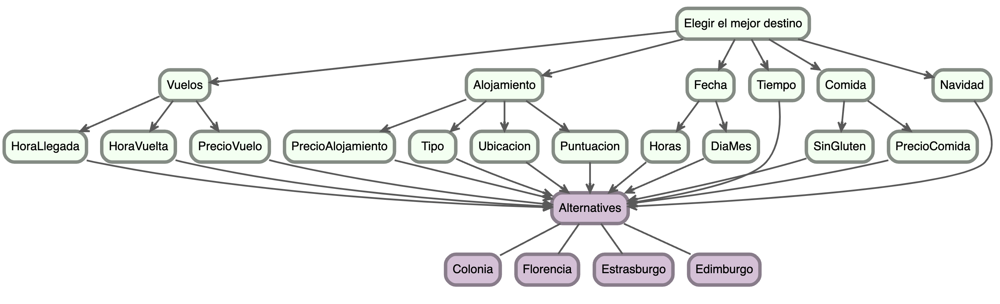
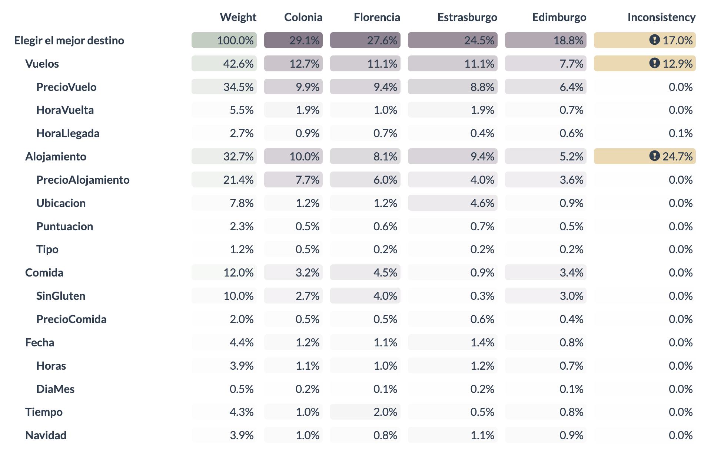
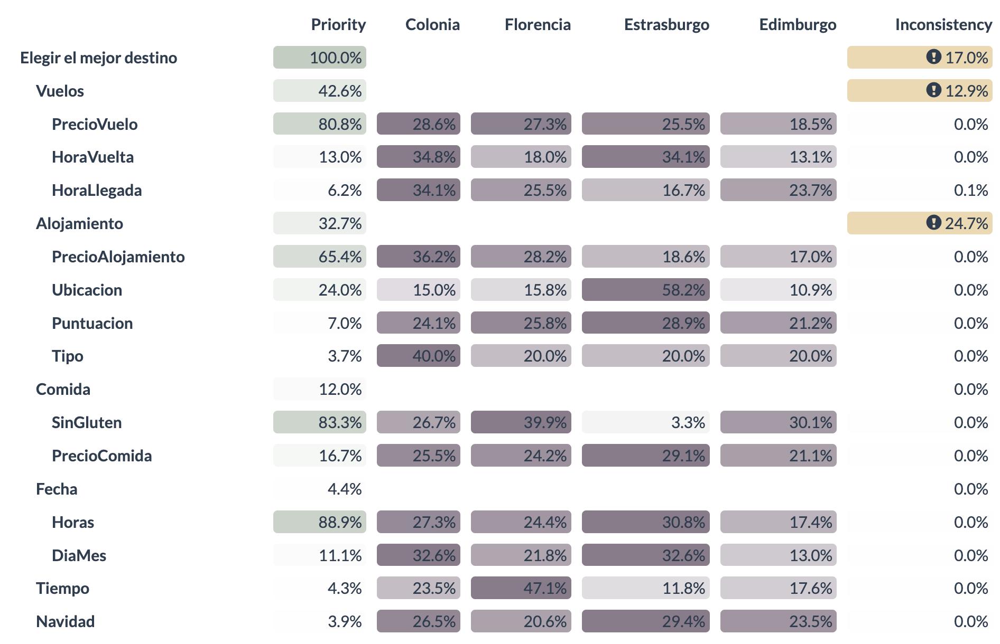

El objetivo de este trabajo es seleccionar el mejor destino para realizar un viaje en familia (compuesta por 5 personas) durante las vacaciones de Navidad, aplicando distintas técnicas de decisión multicriterio vistas en clase (AHP, ELECTRE, PROMETHEE).
Para ello se han definido cuatro alternativas que representan diferentes tipos de experiencias navideñas en Europa, y se han establecido criterios de evaluación que permiten comparar sus ventajas y desventajas.
1.1 Alternativas propuestas
Definiremos las cuatro ciudades europeas seleccionadas como posibles destinos para realizar un viaje durante las vacaciones de Navidad. Cada una ofrece un tipo de experiencia diferente (desde la tradición más clásica hasta la combinación de cultura, historia y modernidad), lo que las convierte en alternativas idóneas para aplicar técnicas de decisión multicriterio.
1.1.1 Colonia (Alemania)
Colonia es una de las ciudades más antiguas de Alemania, situada a orillas del río Rin. Es reconocida por su Catedral gótica, una obra maestra declarada Patrimonio de la Humanidad por la UNESCO, y por su ambiente cosmopolita y acogedor. La ciudad combina una rica historia romana y medieval con una intensa vida moderna, destacando por su arte contemporáneo, su escena musical y sus festivales.
Entre sus principales atractivos se encuentran el Museo Ludwig (arte moderno y pop), el Museo Romano-Germánico, el paseo por el Rin y sus tradicionales cervecerías donde se sirve la cerveza Kölsch, típica de la región.
Durante diciembre, Colonia se transforma en un destino navideño de referencia en Europa. La ciudad acoge más de seis mercados navideños repartidos por distintas plazas, siendo el más famoso el situado frente a la Catedral.
Imagen panorámica de Colonia, Alemania
1.1.2 Florencia (Italia)
Florencia, capital de la región de la Toscana, es una de las ciudades más bellas e influyentes del mundo. Considerada la cuna del Renacimiento, ha sido hogar de grandes artistas como Miguel Ángel, Leonardo da Vinci o Brunelleschi. Pasear por sus calles es recorrer siglos de arte e historia.
Sus principales atractivos incluyen la Catedral de Santa Maria del Fiore con su cúpula icónica, el Ponte Vecchio, la Galería Uffizi y el Palazzo Vecchio. Además, Florencia destaca por su gastronomía toscana, su vino Chianti y sus trattorias tradicionales.
Durante la Navidad, la ciudad se ilumina con el F-Light Festival, un espectáculo de proyecciones y luces sobre sus monumentos, y el mercado navideño de la Piazza Santa Croce, inspirado en la tradición alemana. Aunque las celebraciones son más discretas que en el norte de Europa, el ambiente es elegante y acogedor, perfecto para quienes buscan una Navidad cultural y gastronómica.
Florencia es, en cualquier época del año, un destino excepcional para los amantes del arte, la historia y la buena cocina, ofreciendo una experiencia refinada y profundamente italiana.
Imagen panorámica de Florencia, Italia
1.1.3 Estrasburgo (Francia)
Situada en la región de Alsacia, en la frontera entre Francia y Alemania, Estrasburgo combina lo mejor de ambas culturas. Su casco histórico, la Grande Île, está declarado Patrimonio Mundial por la UNESCO por su arquitectura gótica y sus canales pintorescos. La ciudad es también sede del Parlamento Europeo, lo que le da un carácter internacional y dinámico.
Estrasburgo es una ciudad de escala humana, ideal para recorrer a pie o en bicicleta. Su Catedral de Notre-Dame, una joya del gótico tardío, domina el paisaje urbano. Los barrios de La Petite France y Krusenstern ofrecen un encanto singular con casas de entramado de madera, puentes y calles adoquinadas.
Durante diciembre, la ciudad se convierte en un auténtico símbolo de la Navidad europea. El mercado Christkindelsmärik (el más antiguo del continente, fundado en 1570) llena la ciudad de vida, luces y tradición. La gastronomía alsaciana, con platos como el bäckeoffe o los bredele, refleja la fusión franco-alemana.
Imagen panorámica de Estrasburgo, Francia
1.1.4 Edimburgo (Escocia, Reino Unido)
Edimburgo, es una ciudad de contrastes: combina una arquitectura medieval impresionante con una vibrante vida cultural y artística. Su perfil, dominado por el Castillo de Edimburgo sobre una colina volcánica, es uno de los más reconocibles de Europa.
La ciudad ofrece dos zonas claramente diferenciadas: la Old Town, de calles empedradas y ambiente histórico, y la New Town, planificada en el siglo XVIII con elegantes avenidas georgianas. Entre sus principales atractivos destacan el Royal Mile, el Palacio de Holyrood, el Arthur’s Seat (una colina con vistas panorámicas) y los numerosos museos y festivales culturales.
Durante el invierno, Edimburgo adquiere una atmósfera mágica: el mercado navideño de Princes Street Gardens ofrece artesanía, gastronomía y atracciones; mientras que el Hogmanay, su famoso festival de Año Nuevo, es uno de los más espectaculares del mundo, con desfiles, conciertos y fuegos artificiales.
Imagen panorámica de Edimburgo, Escocia
1.2 Criterios y subcriterios
1.2.1 Vuelos
El vuelo condiciona gran parte de la logística y la comodidad del viaje. Es por ello que será uno de los criterios más importantes a la hora de plantear este viaje. Los subcriterios a estudiar son:
Hora de llegada:
Explicación: Es preferible llegar cuanto antes para aprovechar el primer día.
Preferencia: Cuanto menor sea el valor (es decir, más temprana sea la hora) mejor.
Hora de vuelta:
Explicación: Es preferible vuelos de regreso tardíos para aprovechar el día de salida.
Preferencia: Cuanto mayor sea el valor (es decir, más tarde sea la hora) mejor.
Precio del vuelo:
Explicación: Al ser 5 viajeros, el precio es clave en el viaje, siendo el de los vuelos de los más relevantes.
Preferencia: A menor valor, mejor.
1.2.2 Alojamiento
El alojamiento es un punto clave en este estudio, ya que al plantear el estudio ante una familia de 5 personas, una sola habitación de hotel no es viable, lo que obligaría a reservar dos habitaciones, encareciendo considerablemente el viaje.
Precio del alojamiento:
Explicación: Buscamos alojamientos económicos, siendo clave para el precio del viaje.
Preferencia: A menor valor, mejor.
Tipo de alojamiento:
Explicación: Debido a preferencias personales, se prefiere optar por un hotel en vez de un apartamento, es por ello que se tendrá en cuenta.
Preferencia: Mejor un hotel
Ubicación (centralidad):
Explicación: Una ubicación céntrica reduce tiempo y coste en desplazamientos y facilita disfrutar del destino.
Preferencia: A mayor centralidad mejor.
Puntuación (valoraciones):
Explicación: La puntuación refleja calidad, limpieza y servicio, lo que mejoraría el viaje.
Preferencia: A mayor puntuación mejor.
1.2.3 Fecha
Las fechas influyen en disponibilidad, precios y compatibilidad con los exámenes de enero, teniendo dos dimensiones temporales importantes.
Días de viaje:
Explicación: Cuantas más horas estemos en el destino, más aprovechamos el viaje y más cosas podemos ver.
Preferencia: A mayor tiempo, mejor
Días del mes:
Explicación: Debido a los exámenes de enero, cuanto más alejada sea la fecha del viaje con respecto al 7 de enero, mejor
Preferencia: A mayor distancia mejor.
1.2.4 Tiempo (clima)
El clima condiciona las actividades al aire libre y la estética del viaje (nieve, frío, sol).
Temperatura media:
Explicación: Se prefieren temperaturas más suaves.
Preferencia: A mayor temperatura mejor.
1.2.5 Comida
La calidad y accesibilidad alimentaria influyen fuertemente en la experiencia del viaje, especialmente teniendo en cuenta que un miembro de la familia es celiaco.
Accesibilidad a comidas sin gluten:
Explicación: Disponibilidad de opciones sin gluten en restaurantes y supermercados.
Preferencia: A mayor cobertura mejor.
Precio medio de la comida:
Explicación: El precio de la comida tiene un gran impacto en presupuesto, aumentando el coste total del viaje.
Preferencia: A menor precio mejor.
1.2.6 Experiencia navideña
Dado que nos vamos en fechas navideñas, es de tener en cuenta los mercados navideños y la experiencia navideña que puede ofrecernos el sitio del destino.
Calidad de mercados navideños:
Explicación: Se tiene en cuenta tamaño, variedad de puestos, tradición, ambientación y eventos asociados.
Preferencia: A mayor puntuación mejor.
2 Datos a utilizar en el estudio
2.1 Opciones de vuelos
Vuelos a Colonia
Vuelos Sevilla - Colonia
Fecha
Aeropuerto salida
Hora salida
Aeropuerto llegada
Hora llegada
Precio
jueves 1 enero
SVQ Sevilla
6:30
CGN Colonia
9:25
25€
lunes 5 enero
CNG Colonia
15:35
SVQ Sevilla
18:30
64€
Dados los vuelos de ida y vuelta a Colonia desde Sevilla, vamos a definir los datos que utilizaremos de cara a los subcriterios:
La hora de llegada es: 9:25
La hora de vuelta es: 15:35
El precio del vuelo en total es de: 89€
Vuelos a Florencia
Vuelos Sevilla - Pisa
Fecha
Aeropuerto salida
Hora salida
Aeropuerto llegada
Hora llegada
Precio
miércoles 31 diciembre
SVQ Sevilla
10:30
PSA Pisa
13:05
28€
domingo 4 enero
PSA Pisa
8:00
SVQ Sevilla
10:35
65€
Dados los vuelos de ida y vuelta a Florencia (con conexión al aeropuerto de Pisa) desde Sevilla, vamos a definir los datos que utilizaremos de cara a los subcriterios:
La hora de llegada es: 13:05
La hora de vuelta es: 8:00
El precio del vuelo en total es de: 93€
Vuelos a Estrasburgo
Vuelos Sevilla - Baden Baden
Fecha
Aeropuerto salida
Hora salida
Aeropuerto llegada
Hora llegada
Precio
miércoles 31 diciembre
SVQ Sevilla
17:25
FKB Karlsruhe / Baden-Baden
20:05
45€
lunes 5 enero
FKB Karlsruhe / Baden-Baden
15:10
SVQ Sevilla
17:50
55€
Dados los vuelos de ida y vuelta a Estrasburgo (con conexión al aeropuerto de Karlsruhe / Baden-Baden) desde Sevilla, vamos a definir los datos que utilizaremos de cara a los subcriterios:
La hora de llegada es: 20:05
La hora de vuelta es: 15:10
El precio del vuelo en total es de: 100€
Vuelos a Edimburgo
Vuelos Sevilla - Edimburgo
Fecha
Aeropuerto salida
Hora salida
Aeropuerto llegada
Hora llegada
Precio
martes 30 diciembre
SVQ Sevilla
10:30
EDI Edimburgo
12:40
45€
viernes 2 enero
EDI Edimburgo
5:50
SVQ Sevilla
10:00
93€
Dados los vuelos de ida y vuelta a Edimburgo desde Sevilla, vamos a definir los datos que utilizaremos de cara a los subcriterios:
La hora de llegada es: 12:40
La hora de vuelta es: 5:50
El precio del vuelo en total es de: 138€
2.2 Opciones de alojamiento
Alojamiento en Colonia
Alojamiento en Colonia
Tipo (hotel/apart)
Puntuación
Ubicación
Precio
Hotel
8
3,5
671€
Dado el alojamiento de Colonia, vamos a definir los datos que utilizaremos de cara a los subcriterios:
El precio del alojamiento es: 671€
El alojamiento es: hotel
La ubicación es de: 3.5 km
La puntuación es de: 8
Alojamiento en Florencia
Alojamiento en Florencia
Tipo (hotel/apart)
Puntuación
Ubicación
Precio
Apartamento
8,7
3,3
862€
Dado el alojamiento de Florencia, vamos a definir los datos que utilizaremos de cara a los subcriterios:
El precio del alojamiento es: 862€
El alojamiento es: apartamento
La ubicación es de: 3.3 km
La puntuación es de: 8.7
Alojamiento en Estrasburgo
Alojamiento en Estrasburgo
Tipo (hotel/apart)
Puntuación
Ubicación
Precio
Apartamento
9,4
0,9
1318€
Dado el alojamiento de Estrasburgo, vamos a definir los datos que utilizaremos de cara a los subcriterios:
El precio del alojamiento es: 1318€
El alojamiento es: apartamento
La ubicación es de: 0.9 km
La puntuación es de: 9.4
Alojamiento en Edimburgo
Alojamiento en Edimburgo
Tipo (hotel/apart)
Puntuación
Ubicación
Precio
Apartamento
7
4,8
1431€
Dado el alojamiento de Edimburgo, vamos a definir los datos que utilizaremos de cara a los subcriterios:
El precio del alojamiento es: 1431€
El alojamiento es: apartamento
La ubicación es de: 4.8 km
La puntuación es de: 7
2.3 Opciones de fechas
Fechas de Colonia
Definimos tanto las horas que estamos en el destino, como los días que quedarían hasta el final de las vacaciones:
Las horas que estamos en el destino son: 102 h
Los días que quedan hasta el 7 de enero son: 2
Fechas de Florencia
Definimos tanto las horas que estamos en el destino, como los días que quedarían hasta el final de las vacaciones:
Las horas que estamos en el destino son: 91 h
Los días que quedan hasta el 7 de enero son: 3
Fechas de Estrasburgo
Definimos tanto las horas que estamos en el destino, como los días que quedarían hasta el final de las vacaciones:
Las horas que estamos en el destino son: 115 h
Los días que quedan hasta el 7 de enero son: 2
Fechas de Edimburgo
Definimos tanto las horas que estamos en el destino, como los días que quedarían hasta el final de las vacaciones:
Las horas que estamos en el destino son: 65 h
Los días que quedan hasta el 7 de enero son: 5
2.4 Opciones de Tiempo (clima)
Clima de Colonia
La temperatura media es de: 4º centígrados
Clima de Florencia
La temperatura media es de: 8º centígrados
Clima de Estrasburgo
La temperatura media es de: 2º centígrados
Clima de Edimburgo
La temperatura media es de: 3º centígrados
2.5 Opciones de comida
Comida de Colonia
Número de restaurantes con opciones sin gluten: 8
Precio medio de la comida: 38€
Comida de Florencia
Número de restaurantes con opciones sin gluten: 12
Precio medio de la comida: 40€
Comida de Estrasburgo
Número de restaurantes con opciones sin gluten: 1
Precio medio de la comida: 32.5€
Comida de Edimburgo
Número de restaurantes con opciones sin gluten: 9
Precio medio de la comida: 45.5€
2.6 Opciones de experiencia navideña
Experiencia navideña en Colonia
La experiencia es de una puntuación de: 9
Experiencia navideña en Florencia
La experiencia es de una puntuación de: 7
Experiencia navideña en Estrasburgo
La experiencia es de una puntuación de: 10
Experiencia navideña en Edimburgo
La experiencia es de una puntuación de: 8
3 Cálculo de los pesos
3.1 Comparación de los criterios del estudio
Vemos primero la comparación de los criterios principales, para posteriormente ver la comparación de los subcriterios dentro de cada criterio.
Vuelos (mayor peso): se prioriza mucho la comodidad y coste del desplazamiento, ya que el viaje implica varios adultos y el presupuesto aéreo marca gran diferencia.
Alojamiento: también se considera muy relevante (solo ligeramente menos que vuelos), ya que el confort o el precio del alojamiento influye fuertemente en la satisfacción general.
Comida y Navidad: son de rango medio, debido a que se valoran como aspectos de disfrute más que de decisión práctica.
Fecha y tiempo (clima): se valoran mucho menos, luego se les da poca importancia relativa frente a los factores económicos o logísticos.
Comparación de criterios
Vuelos
Alojamiento
Fecha
Tiempo
Comida
Navidad
Vuelos
1
2
7
9
8
7
Alojamiento
1/2
1
7
9
7
6
Fecha
1/7
1/7
1
1/3
1/4
3
Tiempo
1/9
1/9
3
1
1/5
1/2
Comida
1/8
1/7
4
5
1
6
Navidad
1/7
1/6
1/3
2
1/6
1
Comparación de los subcriterios del criterio vuelos:
Precio: domina completamente, ya que se busca minimizar costes.
Hora vuelta: es más importante que la hora de llegada, ya que afecta al aprovechamiento del último día del viaje (volver tarde permite más disfrute).
Criterio: vuelos
Hora llegada
Hora vuelta
Precio
Hora llegada
1
1/3
1/9
Hora vuelta
3
1
1/9
Precio
9
9
1
Comparación de los subcriterios del criterio alojamiento:
Se prioriza el precio, seguido por la ubicación y la puntuación, porque el presupuesto es el factor dominante.
Tipo de alojamiento (hotel/apartamento): se considera poco relevante, pero hay una pequeña diferencia a la hora de preferir hotel
Criterio: alojamiento
Precio
Tipo
Ubicación
Puntuación
Precio
1
8
7
6
Tipo
1/8
1
1/8
1/3
Ubicación
1/7
1/8
1
7
Puntuación
1/6
3
1/7
1
Comparación de los subcriterios del criterio fecha:
Se considera mucho más importante el número de horas aprovechables que el día concreto del mes, porque se busca maximizar el tiempo efectivo de viaje.
Criterio: fecha
Horas
Día del mes
Horas
1
8
Día del mes
1/8
1
Comparación de los subcriterios del criterio comida:
La disponibilidad de opciones sin gluten tiene un peso dominante, porque un viajero es celiaco y es prioritario que pueda tener opciones de comida durante el viaje.
El precio es relevante, pero claramente secundario.
Criterio: comida
Sin gluten
Precio
Sin gluten
1
5
Precio
1/5
1
3.2 Comparación de las alternativas
Realizamos una comparación de cada criterio y subcriterio según las cuatro alternativas bajo estudio.
Alternativas con respecto al criterio vuelos:
Hora llegada: más temprana es mejor, luego invertimos la escala (min = mejor).
Normalizamos con ratios aproximados:
Colonia: 9:25 = 565 min
Florencia: 13:05 = 785 mim
Estrasburgo: 20:05 = 1205 min
Edimburgo: 12:40 = 760 min
min = mejor
Colonia = 1205/565 = 2.13
Florencia = 1205/785 = 1.54
Estrasburgo = 1205/1205 = 1
Edimburgo = 1205/760 = 1.59
Alternativas: hora de llegada
Colonia
Florencia
Estrasburgo
Edimburgo
Colonia
1
1.38
2.13
1.34
Florencia
0.72
1
1.55
1.09
Estrasburgo
0.47
0.64
1
0.75
Edimburgo
0.75
0.92
1.33
1
Hora vuelta: más tardía es mejor, luego tenemos relación directa (max = mejor).
Normalizamos con ratios aproximados:
Colonia: 15:35: = 935 min
Florencia: 8:00 = 480 min
Estrasburgo: 15:10 = 910 min
Edimburgo: 5:50 = 350 min
max = mejor
Colonia = 935/350 = 2.67
Florencia = 480/350 = 1.37
Estrasburgo = 910/350 = 2.60
Edimburgo = 350/350 = 1
Alternativas: hora de salida
Colonia
Florencia
Estrasburgo
Edimburgo
Colonia
1
1.95
1.01
2.67
Florencia
0.51
1
0.53
1.37
Estrasburgo
0.99
1.89
1
2.6
Edimburgo
0.37
0.73
0.38
1
Precio: menor es mejor, luego invertimos escala (min = mejor).
min = mejor:
Colonia 89€: 138/89 = 1.55
Florencia 93€: 138/93 = 1.48
Estrasburgo 100€: 138/100 = 1.38
Edimburgo 138€: 138/138 = 1
Alternativas: precio del vuelo
Colonia
Florencia
Estrasburgo
Edimburgo
Colonia
1
1.05
1.12
1.55
Florencia
0.95
1
1.07
1.48
Estrasburgo
0.89
0.93
1
1.38
Edimburgo
0.65
0.68
0.72
1
Alternativas con respecto al criterio alojamiento:
Precio: menor es mejor, luego invertimos escala (min = mejor).
min = mejor
Colonia 671€: 1431/671 = 2.13
Florencia 862€: 1431/862 = 1.66
Estrasburgo 1318€: 1431/1318 = 1.09
Edimburgo 1431€: 1431/1431 = 1
Alternativas: precio alojamiento
Colonia
Florencia
Estrasburgo
Edimburgo
Colonia
1
1.28
1.95
2.13
Florencia
0.78
1
1.51
1.66
Estrasburgo
0.51
0.66
1
1.09
Edimburgo
0.47
0.6
0.92
1
Tipo: hotel (1) mejor que apartamento (0), luego asignamos:
Colonia = 1
Florencia = 0.5
Estrasburgo = 0.5
Edimburgo = 0.5
Alternativas: tipo alojamiento
Colonia
Florencia
Estrasburgo
Edimburgo
Colonia
1
2
2
2
Florencia
0.5
1
1
1
Estrasburgo
0.5
1
1
1
Edimburgo
0.5
1
1
1
Ubicación: más cerca es mejor, luego invertimos la escala:
min = mejor
Colonia = 4.8/3.5 = 1.37
Florencia = 4.8/3.3 = 1.45
Estrasburgo = 4.8/0.9 = 5.33
Edimburgo = 4.8/4.8 = 1
Alternativas: ubicación
Colonia
Florencia
Estrasburgo
Edimburgo
Colonia
1
0.94
0.26
1.37
Florencia
1.06
1
0.27
1.45
Estrasburgo
3.85
3.7
1
5.33
Edimburgo
0.73
0.69
0.19
1
Puntuación: mayor es mejor, luego es relativo a mínima.
max = mejor
Colonia = 8/7 = 1.14
Florencia = 8.7/7 = 1.24
Estrasburgo = 9.4/7 = 1.34
Edimburgo = 7/7 = 1
Alternativas: puntuación
Colonia
Florencia
Estrasburgo
Edimburgo
Colonia
1
0.92
0.85
1.14
Florencia
1.08
1
0.86
1.24
Estrasburgo
1.18
1.16
1
1.34
Edimburgo
0.88
0.81
0.75
1
Alternativas con respecto al criterio fechas:
Horas en el destino: más horas son mejores, luego es relativa a la mínima.
max = mejor
Colonia = 102 / 115 = 0.887
Florencia = 91 / 115 = 0.791
Estrasburgo = 115 / 115 = 1
Edimburgo = 65 / 115 = 0.565
Alternativas: horas
Colonia
Florencia
Estrasburgo
Edimburgo
Colonia
1
1.12
0.887
1.57
Florencia
0.89
1
0.791
1.4
Estrasburgo
1.13
1.26
1
1.77
Edimburgo
0.64
0.71
0.565
1
Días hasta el 7 de enero: más días son mejores
max = mejor
Colonia = 5 / 2 = 2.5
Florencia = 5 / 3 = 1.67
Estrasburgo = 5 / 2 = 2.5
Edimburgo = 5 / 5 = 1
Alternativas: días
Colonia
Florencia
Estrasburgo
Edimburgo
Colonia
1
1.5
1
2.5
Florencia
0.64
1
0.67
1.67
Estrasburgo
1
1.5
1
2.5
Edimburgo
0.4
0.6
0.4
1
Alternativas con respecto al criterio tiempo:
Temperatura media: a mayor temperatura mejor
max = mejor
Colonia = 4 / 8 = 0.5
Florencia = 8 / 8 = 1
Estrasburgo = 2 / 8 = 0.25
Edimburgo = 3 / 8 = 0.375
Alternativas: clima
Colonia
Florencia
Estrasburgo
Edimburgo
Colonia
1
0.5
2
1.33
Florencia
2
1
4
2.67
Estrasburgo
0.5
0.25
1
0.67
Edimburgo
0.75
0.375
1.5
1
Alternativas con respecto al criterio comida:
Número de restaurantes con comida sin gluten: cuantos más, mejor
max = mejor
Colonia = 8/12 = 0.667
Florencia = 12/12 = 1
Estrasburgo = 1/12 = 0.083
Edimburgo = 9/12 = 0.75
Alternativas: sin gluten
Colonia
Florencia
Estrasburgo
Edimburgo
Colonia
1
0.667
8
0.889
Florencia
1.5
1
12
1.33
Estrasburgo
0.125
0.083
1
0.11
Edimburgo
1.125
0.75
9
1
Precio de la comida: A menor precio mejor, luego invertimos
min = mejor
Colonia = 45.5 / 38 = 1.197
Florencia = 45.5 / 40 = 1.137
Estrasburgo = 45.5 / 32.5 = 1.4
Edimburgo = 45.5 / 45.5 = 1
Alternativas: precio medio
Colonia
Florencia
Estrasburgo
Edimburgo
Colonia
1
1.052
0.885
1.197
Florencia
0.95
1
0.834
1.138
Estrasburgo
1.17
1.199
1
1.4
Edimburgo
0.835
0.879
0.714
1
Alternativas con respecto al criterio experiencia navideña:
Experiencia navideña: a mayor puntuación, mejor
max = mejor
Colonia = 9 / 10 = 0.9
Florencia = 7 / 10 = 0.7
Estrasburgo = 10 / 10 = 1
Edimburgo = 8 / 10 = 0.8
Alternativas: experiencia
Colonia
Florencia
Estrasburgo
Edimburgo
Colonia
1
1.286
0.9
1.125
Florencia
0.778
1
0.7
0.875
Estrasburgo
1.11
1.429
1
1.25
Edimburgo
0.889
1.143
0.8
1
3.3 Cálculo de los pesos de los criterios
Una vez definidas las tablas de comparación, vamos a calcular los pesos de cada criterio. Llegados a este punto, vamos a cargar las librerías que necesitamos:
Hora llegada Hora vuelta Precio vuelos Precio alojamiento
0.02656472 0.05521880 0.34461648 0.21411960
Tipo Ubicación Puntuación Horas
0.01208106 0.07844504 0.02275430 0.03946716
Dia del mes Tiempo Sin gluten Precio comida
0.00493284 0.04300000 0.09991267 0.01998733
Navidad
0.03900000
3.4 Cálculo de pesos de las alternativas
Calculamos los pesos de las alternativas del criterio vuelos:
Colonia Florencia Estrasburgo Edimburgo
[1,] 29.12 27.56 24.52 18.8
El esquema de este problema lo podemos ver en ahp:RunGUI, mediante el código de “problema.ahp”

4.1 Tabla 1

Total Contribution
Esta primera tabla presenta los pesos globales de cada criterio y subcriterio, junto con el desempeño de cada ciudad según esos factores. En otras palabras, muestra qué tan importante es cada criterio para la decisión y qué tan bien se comporta cada destino en cada aspecto.
Importancia de los criterios
Se observa que los factores con mayor peso son los relacionados con los vuelos (42.6%) y el alojamiento (32.7%), mientras que otros criterios como la comida (12.0%), la fecha (4.4%), el tiempo (4.3%) o la Navidad (3.9%) tienen una importancia mucho menor.
Esto significa que la familia prioriza claramente los aspectos económicos y logísticos del viaje (precio, horarios y alojamiento) por encima de consideraciones secundarias como el clima o las festividades.
Por ejemplo, es lógico que el precio del vuelo (34.5%) y el precio del alojamiento (21.4%) sean determinantes. En cambio, factores como la puntuación del alojamiento (2.3%) o eltipo de hotel (1.2%) tienen poca influencia, lo que sugiere que el viajero estaría dispuesto a sacrificar ciertos lujos con tal de obtener un mejor precio.
Desempeño de las alternativas
En cuanto a los destinos:
Colonia (29.1%) obtiene el valor global más alto, lo que la posiciona como la opción más favorable.
Florencia (27.6%) y Estrasburgo (24.5%) le siguen de cerca, mientras queEdimburgo (18.8%) se ubica en la última posición.
Esto indica que, considerando todos los criterios ponderados, Colonia representa el equilibrio más ventajoso entre precio, accesibilidad y alojamiento.
Colonia podría ofrecer vuelos más baratos y alojamientos más económicos, lo que compensa posibles desventajas como el clima o la oferta gastronómica. En cambio, Edimburgo, aunque puede tener un encanto turístico particular, parece penalizada por precios más altos o disponibilidad limitada en vuelos y hoteles.
Inconsistencias
Los valores de inconsistencia muestran tres casos destacados:
Elegir el mejor destino: 17.0%
Vuelos: 12.9%
Alojamiento: 24.7%
Estos porcentajes reflejan que en las comparaciones entre criterios o entre alternativas dentro de esos grupos hubo cierta falta de coherencia lógica. En AHP se considera aceptable una inconsistencia menor al 10%; cuando supera ese umbral, se recomienda revisar los juicios emitidos.
Estas contradicciones hacen que el modelo pierda cierta precisión, aunque no necesariamente invalida el resultado, siempre que la inconsistencia no sea extrema.
Conclusión de la primera tabla
En síntesis, la primera tabla muestra que lade cisión está fuertemente orientada por los costos del viaje, y que Colonia se perfila como el destino más eficiente desde ese punto de vista.
4.2 Tabla 2

Priority
La segunda tabla profundiza el análisis mostrando las prioridades internas dentro de cada criterio principal. En otras palabras, especifica qué subcriterios son más relevantes dentro de cada categoría (por ejemplo, dentro de “Vuelos” o “Alojamiento”), y cómo se comportan los destinos en cada uno de ellos.
Importancia dentro de cada criterio
Los resultados revelan patrones claros:
En Vuelos (42.6%), el subcriterio más importante es el Precio del vuelo (80.8%), mientras que la Hora de llegada (6.2%) y la Hora de vuelta (13%) son menos determinantes. Esto refleja un comportamiento racional: para la mayoría de viajeros, el precio del billete pesa mucho más que la hora del vuelo.
En Alojamiento (32.7%), el Precio del alojamiento (65.4%) predomina claramente sobre la ubicación (24%) o el tipo (3.7%). Nuevamente, el costo aparece como el factor decisivo.
En Comida (12%), la disponibilidad de opciones sin gluten (83.3%) es el subcriterio principal,debido a que uno de los viajeros es celiaco.
Los criterios restantes (Fecha, Tiempo y Navidad) tienen pesos mucho menores, mostrando que, aunque pueden influir, no cambian drásticamente la decisión.
Resultados por destino
Los valores dentro de cada subcriterio muestran cómo se comporta cada destino en términos relativos:
Colonia sigue liderando en la mayoría de los factores económicos, como el precio del vuelo (28.6%) y el precio del alojamiento (36.2%), lo que refuerza su posición como la alternativa más conveniente.
Florencia destaca en el aspecto de comida sin gluten (39.9%), lo que sugiere que ofrece mejores opciones gastronómicas adaptadas a esa necesidad.
Estrasburgo sobresale en ubicación (58.2%), lo que podría interpretarse como una mejor localización de los alojamientos o facilidad para moverse dentro de la ciudad.
Edimburgo, aunque mantiene valores bajos en precios, obtiene mejores resultados en criterios secundarios como ambiente navideño (29.4%), lo que podría hacerla atractiva para un perfil de viajero diferente (por ejemplo, alguien que valore más la experiencia cultural o el ambiente que los costos).
Inconsistencia y su impacto
La inconsistencia se mantiene idéntica a la primera tabla (17%, 12.9% y 24.7%), lo que indica que los ajustes en prioridades locales no corrigieron las contradicciones originales.
Esto no invalida el modelo, pero sí sugiere que el proceso de comparación podría mejorarse.
4.3 Conclusiones generales
Colonia es, de acuerdo con los pesos globales y prioridades locales, el destino más favorable. Su combinación de vuelos y alojamientos económicos la posiciona como la mejor opción desde un punto de vista racional y presupuestario.
Florencia se ubica en segundo lugar, con una oferta gastronómica más atractiva y posiblemente un entorno más turístico, aunque con precios más elevados.
Estrasburgo muestra fortalezas en la ubicación y en algunos criterios logísticos, pero sus costos algo mayores reducen su atractivo general.
Edimburgo, pese a contar con ventajas culturales o estacionales (especialmente en el periodo navideño), resulta la opción menos favorable en términos económicos y de accesibilidad.
La inconsistencia detectada (entre 12.9% y 24.7%) indica que el proceso de decisión contiene ciertas contradicciones internas. Esto es normal en decisiones complejas con múltiples criterios.
5 Método Promethee
5.1 Problema
Para aplicar el método Promethee, primero vamos a redefinir el problema, para que no haya subcriterios y podamos resolverlo mediante promethee:
Vuelos: coste total de los vuelos de ida y vuelta, ya que es el subcriterio más importante a tener en cuenta de este criterio.
Alojamiento: coste del alojamiento, ya que es el subcriterio más a tener en cuenta de cara al estudio.
Fechas: horas totales que estamos en el destino.
Clima: temperatura media que hace en cada destino.
Comida: número de restaurantes que tienen opciones sin gluten, ya que uno de los viajeros es celiaco y es a tener en cuenta.
Navidad: puntuación de la calidad de los mercados navideños que puede ofrecer la ciudad.
Criterios
min/max
Colonia
Florencia
Estrasburgo
Edimburgo
Vuelos
min
89
93
100
138
Alojamiento
min
671
862
1318
1431
Fechas
max
102
91
115
65
Clima
max
4
8
2
3
Comida
max
8
12
1
9
Navidad
max
9
7
10
8
Definimos también las funciones de preferencia que se van a aplicar a cada uno de los criterios, con sus respectivos parámetros:
Vuelos (coste total, min)
Función de preferencia: preferencia lineal.
Razonamiento: La diferencia de coste entre vuelos es directamente proporcional a la preferencia. Por ejemplo, pagar 10€ menos es significativamente mejor, y a medida que aumenta la diferencia el grado de preferencia también.
Parámetro: p=20€
Alojamiento (coste, min)
Función de preferencia: preferencia lineal.
Razonamiento: Similar a vuelos, el coste adicional afecta directamente la preferencia, sin necesidad de un umbral de indiferencia si diferencias de precio pequeñas son significativas.
Parámetro: p = 300€
Fechas (horas totales en destino, max)
Función de preferencia: criterio usual
Razonamiento: Cada hora extra en el destino se valora por igual, sin necesidad de linealidad ni cuasicriterios. La función usual devuelve 1 si una alternativa tiene más horas que otra, 0 si es igual o menor.
Clima (temperatura media, max)
Función de preferencia: nivel
Razonamiento: Diferencias pequeñas de temperatura (1–2ºC) no importan mucho, solo cuando la diferencia es más significativa se considera preferencia. Por ejemplo, pasar de 3ºC a 8ºC sí mejora claramente la preferencia.
Parámetro: q = 1, p = 3
Comida (número de restaurantes sin gluten, max)
Función de preferencia: preferencia lineal
Razonamiento: Cada restaurante extra con opciones sin gluten aumenta la preferencia de manera lineal.
Parámetro: p = 10
Navidad (puntuación mercados navideños, max)
Función de preferencia: cuasicriterio
Razonamiento: El viajero solo percibe diferencias significativas en la experiencia navideña. Una puntuación 9 frente a 8 apenas cambia la preferencia, mientras que 10 frente a 7 sí es claramente mejor.
Parámetro: q = 1
5.2 Datos
Introducimos los valores de la matriz de decisión definida anteriormente:
Código
tabla =multicriterio.crea.matrizdecision(c(-89,-671,102,4,8,9,-93,-862,91,8,12,7,-100,-1318,115,2,1,10,-138,-1431,65,3,9,8),numalternativas =4,numcriterios =6,v.nombresalt =c("Colonia","Florencia","Estrasburgo", "Edimburgo"),v.nombrescri =c("Vuelos","Alojamiento","Fechas","Clima","Comida","Navidad"))tabla
Ordenación final de las alternativas del método Promethee II con medias
Código
order(tabla_ii_med$vflujos.netos, decreasing = T)
[1] 1 2 3 4
5.6 Conclusiones
Con el método Promethee podemos ver que la mejor alternativa para realizar un viaje en Navidad es la ciudad de Colonia, Alemania.
6 Método Electre
6.1 Problema
Para aplicar el método Electre, primero vamos a redefinir el problema, para que no haya subcriterios y podamos resolverlo mediante Electre:
Vuelos: coste total de los vuelos de ida y vuelta, ya que es el subcriterio más importante a tener en cuenta de este criterio.
Alojamiento: coste del alojamiento, ya que es el subcriterio más a tener en cuenta de cara al estudio.
Fechas: horas totales que estamos en el destino.
Clima: temperatura media que hace en cada destino.
Comida: número de restaurantes que tienen opciones sin gluten, ya que uno de los viajeros es celiaco y es a tener en cuenta.
Navidad: puntuación de la calidad de los mercados navideños que puede ofrecer la ciudad.
Definimos también los índices de concordancia y discordancia para cada uno de los criterios:
Criterios
min/max
Colonia
Florencia
Estrasburgo
Edimburgo
Vuelos
min
89
93
100
138
Alojamiento
min
671
862
1318
1431
Fechas
max
102
91
115
65
Clima
max
4
8
2
3
Comida
max
8
12
1
9
Navidad
max
9
7
10
8
Umbral global de concordancia (α)
α = 0.70 (70%)
Interpretación: una alternativa a domina por concordancia a b si la suma de pesos de criterios donde a es al menos tan buena como b es ≥ 0.70. Se elege 0.70 porque es un punto intermedio que exige mayorías ponderadas.
Justificación: el rango es 89–138 (diferencia máxima 49). Puesto que 25€ separa diferencias operativas relevantes (evita compensar un sobrecoste sustentado), nos quedamos con este valor.
Justificación: 400 distingue diferencias grandes (p. ej. una opción cuyo alojamiento cuesta varias centenas más no debería ser compensada por otros criterios).
Justificación: como viaja una persona celiaca, diferencias grandes en oferta gastronómica no deben ser compensadas — 4 restaurantes es una diferencia práctica (oferta sensiblemente mayor). Umbral relativamente estricto por la restricción dietética.
Con el método Electre podemos ver que las mejores alternativas para realizar un viaje en Navidad son las ciudades de Colonia y Florencia, sin destacar ninguna en este método.
Sin embargo, en el primer gráfico podemos ver que Colonia domina a Edimburgo y Estrasburgo, mientras que Florencia solo domina a Edimburgo, por lo que podemos concluir que Colonia es un destino significativamente mejor que los otros tres estudiados.
7 Conclusiones
Dados los tres métodos de resolución de problemas multicriterio, la mejor alternativa es realizar el viaje de Navidad a Colonia.
---title: "Datos del Viaje"author: "María Varela Oyola"editor: visualdate: "`r Sys.Date()`"date-format: "DD/MM/YYYY"lang: estoc: truetoc-depth: 4number-sections: trueformat: html: code-tools: true code-fold: true pdf: keep-tex: true header-includes: - \usepackage{float} - \floatplacement{table}{H} - \floatplacement{figure}{H}execute: echo: true warnings: false---\pagebreak# PlanteamientoEl objetivo de este trabajo es seleccionar el mejor destino para realizar un viaje en familia (compuesta por 5 personas) durante las vacaciones de Navidad, aplicando distintas técnicas de decisión multicriterio vistas en clase (AHP, ELECTRE, PROMETHEE).\Para ello se han definido cuatro alternativas que representan diferentes tipos de experiencias navideñas en Europa, y se han establecido criterios de evaluación que permiten comparar sus ventajas y desventajas.## Alternativas propuestasDefiniremos las cuatro ciudades europeas seleccionadas como posibles destinos para realizar un viaje durante las vacaciones de Navidad. Cada una ofrece un tipo de experiencia diferente (desde la tradición más clásica hasta la combinación de cultura, historia y modernidad), lo que las convierte en alternativas idóneas para aplicar técnicas de decisión multicriterio.### Colonia (Alemania)Colonia es una de las ciudades más antiguas de Alemania, situada a orillas del río Rin. Es reconocida por su Catedral gótica, una obra maestra declarada Patrimonio de la Humanidad por la UNESCO, y por su ambiente cosmopolita y acogedor. La ciudad combina una rica historia romana y medieval con una intensa vida moderna, destacando por su arte contemporáneo, su escena musical y sus festivales.Entre sus principales atractivos se encuentran el Museo Ludwig (arte moderno y pop), el Museo Romano-Germánico, el paseo por el Rin y sus tradicionales cervecerías donde se sirve la cerveza Kölsch, típica de la región.Durante diciembre, Colonia se transforma en un destino navideño de referencia en Europa. La ciudad acoge más de seis mercados navideños repartidos por distintas plazas, siendo el más famoso el situado frente a la Catedral.{fig-align="center" width="225"}### Florencia (Italia)Florencia, capital de la región de la Toscana, es una de las ciudades más bellas e influyentes del mundo. Considerada la cuna del Renacimiento, ha sido hogar de grandes artistas como Miguel Ángel, Leonardo da Vinci o Brunelleschi. Pasear por sus calles es recorrer siglos de arte e historia.Sus principales atractivos incluyen la Catedral de Santa Maria del Fiore con su cúpula icónica, el Ponte Vecchio, la Galería Uffizi y el Palazzo Vecchio. Además, Florencia destaca por su gastronomía toscana, su vino Chianti y sus trattorias tradicionales.Durante la Navidad, la ciudad se ilumina con el F-Light Festival, un espectáculo de proyecciones y luces sobre sus monumentos, y el mercado navideño de la Piazza Santa Croce, inspirado en la tradición alemana. Aunque las celebraciones son más discretas que en el norte de Europa, el ambiente es elegante y acogedor, perfecto para quienes buscan una Navidad cultural y gastronómica.Florencia es, en cualquier época del año, un destino excepcional para los amantes del arte, la historia y la buena cocina, ofreciendo una experiencia refinada y profundamente italiana.{fig-align="center" width="225"}### Estrasburgo (Francia)Situada en la región de Alsacia, en la frontera entre Francia y Alemania, Estrasburgo combina lo mejor de ambas culturas. Su casco histórico, la Grande Île, está declarado Patrimonio Mundial por la UNESCO por su arquitectura gótica y sus canales pintorescos. La ciudad es también sede del Parlamento Europeo, lo que le da un carácter internacional y dinámico.Estrasburgo es una ciudad de escala humana, ideal para recorrer a pie o en bicicleta. Su Catedral de Notre-Dame, una joya del gótico tardío, domina el paisaje urbano. Los barrios de La Petite France y Krusenstern ofrecen un encanto singular con casas de entramado de madera, puentes y calles adoquinadas.Durante diciembre, la ciudad se convierte en un auténtico símbolo de la Navidad europea. El mercado Christkindelsmärik (el más antiguo del continente, fundado en 1570) llena la ciudad de vida, luces y tradición. La gastronomía alsaciana, con platos como el bäckeoffe o los bredele, refleja la fusión franco-alemana.{fig-align="center" width="233"}### Edimburgo (Escocia, Reino Unido)Edimburgo, es una ciudad de contrastes: combina una arquitectura medieval impresionante con una vibrante vida cultural y artística. Su perfil, dominado por el Castillo de Edimburgo sobre una colina volcánica, es uno de los más reconocibles de Europa.La ciudad ofrece dos zonas claramente diferenciadas: la Old Town, de calles empedradas y ambiente histórico, y la New Town, planificada en el siglo XVIII con elegantes avenidas georgianas. Entre sus principales atractivos destacan el Royal Mile, el Palacio de Holyrood, el Arthur’s Seat (una colina con vistas panorámicas) y los numerosos museos y festivales culturales.Durante el invierno, Edimburgo adquiere una atmósfera mágica: el mercado navideño de Princes Street Gardens ofrece artesanía, gastronomía y atracciones; mientras que el Hogmanay, su famoso festival de Año Nuevo, es uno de los más espectaculares del mundo, con desfiles, conciertos y fuegos artificiales.{fig-align="center" width="225"}\pagebreak## Criterios y subcriterios### VuelosEl vuelo condiciona gran parte de la logística y la comodidad del viaje. Es por ello que será uno de los criterios más importantes a la hora de plantear este viaje. Los subcriterios a estudiar son:- Hora de llegada: - Explicación: Es preferible llegar cuanto antes para aprovechar el primer día. - Preferencia: Cuanto menor sea el valor (es decir, más temprana sea la hora) mejor.- Hora de vuelta: - Explicación: Es preferible vuelos de regreso tardíos para aprovechar el día de salida. - Preferencia: Cuanto mayor sea el valor (es decir, más tarde sea la hora) mejor.- Precio del vuelo: - Explicación: Al ser 5 viajeros, el precio es clave en el viaje, siendo el de los vuelos de los más relevantes. - Preferencia: A menor valor, mejor.### AlojamientoEl alojamiento es un punto clave en este estudio, ya que al plantear el estudio ante una familia de 5 personas, una sola habitación de hotel no es viable, lo que obligaría a reservar dos habitaciones, encareciendo considerablemente el viaje.- Precio del alojamiento: - Explicación: Buscamos alojamientos económicos, siendo clave para el precio del viaje. - Preferencia: A menor valor, mejor.- Tipo de alojamiento: - Explicación: Debido a preferencias personales, se prefiere optar por un hotel en vez de un apartamento, es por ello que se tendrá en cuenta. - Preferencia: Mejor un hotel- Ubicación (centralidad): - Explicación: Una ubicación céntrica reduce tiempo y coste en desplazamientos y facilita disfrutar del destino. - Preferencia: A mayor centralidad mejor.- Puntuación (valoraciones): - Explicación: La puntuación refleja calidad, limpieza y servicio, lo que mejoraría el viaje. - Preferencia: A mayor puntuación mejor.### FechaLas fechas influyen en disponibilidad, precios y compatibilidad con los exámenes de enero, teniendo dos dimensiones temporales importantes.- Días de viaje: - Explicación: Cuantas más horas estemos en el destino, más aprovechamos el viaje y más cosas podemos ver. - Preferencia: A mayor tiempo, mejor- Días del mes: - Explicación: Debido a los exámenes de enero, cuanto más alejada sea la fecha del viaje con respecto al 7 de enero, mejor - Preferencia: A mayor distancia mejor.### Tiempo (clima)El clima condiciona las actividades al aire libre y la estética del viaje (nieve, frío, sol).- Temperatura media: - Explicación: Se prefieren temperaturas más suaves. - Preferencia: A mayor temperatura mejor.### ComidaLa calidad y accesibilidad alimentaria influyen fuertemente en la experiencia del viaje, especialmente teniendo en cuenta que un miembro de la familia es celiaco.- Accesibilidad a comidas sin gluten: - Explicación: Disponibilidad de opciones sin gluten en restaurantes y supermercados. - Preferencia: A mayor cobertura mejor.- Precio medio de la comida: - Explicación: El precio de la comida tiene un gran impacto en presupuesto, aumentando el coste total del viaje. - Preferencia: A menor precio mejor.### Experiencia navideñaDado que nos vamos en fechas navideñas, es de tener en cuenta los mercados navideños y la experiencia navideña que puede ofrecernos el sitio del destino.- Calidad de mercados navideños: - Explicación: Se tiene en cuenta tamaño, variedad de puestos, tradición, ambientación y eventos asociados. - Preferencia: A mayor puntuación mejor.\pagebreak# Datos a utilizar en el estudio## Opciones de vuelos**Vuelos a Colonia**| Fecha | Aeropuerto salida | Hora salida | Aeropuerto llegada | Hora llegada | Precio ||------------|------------|------------|------------|------------|------------|| jueves 1 enero | SVQ Sevilla | 6:30 | CGN Colonia | 9:25 | 25€ || lunes 5 enero | CNG Colonia | 15:35 | SVQ Sevilla | 18:30 | 64€ |: Vuelos Sevilla - ColoniaDados los vuelos de ida y vuelta a Colonia desde Sevilla, vamos a definir los datos que utilizaremos de cara a los subcriterios:- La hora de llegada es: 9:25- La hora de vuelta es: 15:35- El precio del vuelo en total es de: 89€**Vuelos a Florencia**| Fecha | Aeropuerto salida | Hora salida | Aeropuerto llegada | Hora llegada | Precio ||------------|------------|------------|------------|------------|------------|| miércoles 31 diciembre | SVQ Sevilla | 10:30 | PSA Pisa | 13:05 | 28€ || domingo 4 enero | PSA Pisa | 8:00 | SVQ Sevilla | 10:35 | 65€ |: Vuelos Sevilla - PisaDados los vuelos de ida y vuelta a Florencia (con conexión al aeropuerto de Pisa) desde Sevilla, vamos a definir los datos que utilizaremos de cara a los subcriterios:- La hora de llegada es: 13:05- La hora de vuelta es: 8:00- El precio del vuelo en total es de: 93€**Vuelos a Estrasburgo**| Fecha | Aeropuerto salida | Hora salida | Aeropuerto llegada | Hora llegada | Precio ||------------|------------|------------|------------|------------|------------|| miércoles 31 diciembre | SVQ Sevilla | 17:25 | FKB Karlsruhe / Baden-Baden | 20:05 | 45€ || lunes 5 enero | FKB Karlsruhe / Baden-Baden | 15:10 | SVQ Sevilla | 17:50 | 55€ |: Vuelos Sevilla - Baden BadenDados los vuelos de ida y vuelta a Estrasburgo (con conexión al aeropuerto de Karlsruhe / Baden-Baden) desde Sevilla, vamos a definir los datos que utilizaremos de cara a los subcriterios:- La hora de llegada es: 20:05- La hora de vuelta es: 15:10- El precio del vuelo en total es de: 100€**Vuelos a Edimburgo**| Fecha | Aeropuerto salida | Hora salida | Aeropuerto llegada | Hora llegada | Precio ||------------|------------|------------|------------|------------|------------|| martes 30 diciembre | SVQ Sevilla | 10:30 | EDI Edimburgo | 12:40 | 45€ || viernes 2 enero | EDI Edimburgo | 5:50 | SVQ Sevilla | 10:00 | 93€ |: Vuelos Sevilla - EdimburgoDados los vuelos de ida y vuelta a Edimburgo desde Sevilla, vamos a definir los datos que utilizaremos de cara a los subcriterios:- La hora de llegada es: 12:40- La hora de vuelta es: 5:50- El precio del vuelo en total es de: 138€## Opciones de alojamiento**Alojamiento en Colonia**| Tipo (hotel/apart) | Puntuación | Ubicación | Precio ||--------------------|------------|-----------|--------|| Hotel | 8 | 3,5 | 671€ |: Alojamiento en ColoniaDado el alojamiento de Colonia, vamos a definir los datos que utilizaremos de cara a los subcriterios:- El precio del alojamiento es: 671€- El alojamiento es: hotel- La ubicación es de: 3.5 km- La puntuación es de: 8**Alojamiento en Florencia**| Tipo (hotel/apart) | Puntuación | Ubicación | Precio ||--------------------|------------|-----------|--------|| Apartamento | 8,7 | 3,3 | 862€ |: Alojamiento en FlorenciaDado el alojamiento de Florencia, vamos a definir los datos que utilizaremos de cara a los subcriterios:- El precio del alojamiento es: 862€- El alojamiento es: apartamento- La ubicación es de: 3.3 km- La puntuación es de: 8.7**Alojamiento en Estrasburgo**| Tipo (hotel/apart) | Puntuación | Ubicación | Precio ||--------------------|------------|-----------|--------|| Apartamento | 9,4 | 0,9 | 1318€ |: Alojamiento en EstrasburgoDado el alojamiento de Estrasburgo, vamos a definir los datos que utilizaremos de cara a los subcriterios:- El precio del alojamiento es: 1318€- El alojamiento es: apartamento- La ubicación es de: 0.9 km- La puntuación es de: 9.4**Alojamiento en Edimburgo**| Tipo (hotel/apart) | Puntuación | Ubicación | Precio ||--------------------|------------|-----------|--------|| Apartamento | 7 | 4,8 | 1431€ |: Alojamiento en EdimburgoDado el alojamiento de Edimburgo, vamos a definir los datos que utilizaremos de cara a los subcriterios:- El precio del alojamiento es: 1431€- El alojamiento es: apartamento- La ubicación es de: 4.8 km- La puntuación es de: 7## Opciones de fechas**Fechas de Colonia**Definimos tanto las horas que estamos en el destino, como los días que quedarían hasta el final de las vacaciones:- Las horas que estamos en el destino son: 102 h- Los días que quedan hasta el 7 de enero son: 2**Fechas de Florencia**Definimos tanto las horas que estamos en el destino, como los días que quedarían hasta el final de las vacaciones:- Las horas que estamos en el destino son: 91 h- Los días que quedan hasta el 7 de enero son: 3**Fechas de Estrasburgo**Definimos tanto las horas que estamos en el destino, como los días que quedarían hasta el final de las vacaciones:- Las horas que estamos en el destino son: 115 h- Los días que quedan hasta el 7 de enero son: 2**Fechas de Edimburgo**Definimos tanto las horas que estamos en el destino, como los días que quedarían hasta el final de las vacaciones:- Las horas que estamos en el destino son: 65 h- Los días que quedan hasta el 7 de enero son: 5## Opciones de Tiempo (clima)**Clima de Colonia**La temperatura media es de: 4º centígrados**Clima de Florencia**La temperatura media es de: 8º centígrados**Clima de Estrasburgo**La temperatura media es de: 2º centígrados**Clima de Edimburgo**La temperatura media es de: 3º centígrados## Opciones de comida**Comida de Colonia**- Número de restaurantes con opciones sin gluten: 8- Precio medio de la comida: 38€**Comida de Florencia**- Número de restaurantes con opciones sin gluten: 12- Precio medio de la comida: 40€**Comida de Estrasburgo**- Número de restaurantes con opciones sin gluten: 1- Precio medio de la comida: 32.5€**Comida de Edimburgo**- Número de restaurantes con opciones sin gluten: 9- Precio medio de la comida: 45.5€## Opciones de experiencia navideña**Experiencia navideña en Colonia**La experiencia es de una puntuación de: 9**Experiencia navideña en Florencia**La experiencia es de una puntuación de: 7**Experiencia navideña en Estrasburgo**La experiencia es de una puntuación de: 10**Experiencia navideña en Edimburgo**La experiencia es de una puntuación de: 8\pagebreak# Cálculo de los pesos## Comparación de los criterios del estudioVemos primero la comparación de los criterios principales, para posteriormente ver la comparación de los subcriterios dentro de cada criterio.- Vuelos (mayor peso): se prioriza mucho la comodidad y coste del desplazamiento, ya que el viaje implica varios adultos y el presupuesto aéreo marca gran diferencia.- Alojamiento: también se considera muy relevante (solo ligeramente menos que vuelos), ya que el confort o el precio del alojamiento influye fuertemente en la satisfacción general.- Comida y Navidad: son de rango medio, debido a que se valoran como aspectos de disfrute más que de decisión práctica.- Fecha y tiempo (clima): se valoran mucho menos, luego se les da poca importancia relativa frente a los factores económicos o logísticos.| | | | | | | ||-------------|--------|-------------|-------|--------|--------|---------|| | Vuelos | Alojamiento | Fecha | Tiempo | Comida | Navidad || Vuelos | 1 | 2 | 7 | 9 | 8 | 7 || Alojamiento | 1/2 | 1 | 7 | 9 | 7 | 6 || Fecha | 1/7 | 1/7 | 1 | 1/3 | 1/4 | 3 || Tiempo | 1/9 | 1/9 | 3 | 1 | 1/5 | 1/2 || Comida | 1/8 | 1/7 | 4 | 5 | 1 | 6 || Navidad | 1/7 | 1/6 | 1/3 | 2 | 1/6 | 1 |: Comparación de criterios**Comparación de los subcriterios del criterio vuelos:**- Precio: domina completamente, ya que se busca minimizar costes.- Hora vuelta: es más importante que la hora de llegada, ya que afecta al aprovechamiento del último día del viaje (volver tarde permite más disfrute).| | | | ||--------------|--------------|-------------|--------|| | Hora llegada | Hora vuelta | Precio || Hora llegada | 1 | 1/3 | 1/9 || Hora vuelta | 3 | 1 | 1/9 || Precio | 9 | 9 | 1 |: Criterio: vuelos\pagebreak**Comparación de los subcriterios del criterio alojamiento:**- Se prioriza el precio, seguido por la ubicación y la puntuación, porque el presupuesto es el factor dominante.- Tipo de alojamiento (hotel/apartamento): se considera poco relevante, pero hay una pequeña diferencia a la hora de preferir hotel| | | | | ||------------|--------|------|-----------|------------|| | Precio | Tipo | Ubicación | Puntuación || Precio | 1 | 8 | 7 | 6 || Tipo | 1/8 | 1 | 1/8 | 1/3 || Ubicación | 1/7 | 1/8 | 1 | 7 || Puntuación | 1/6 | 3 | 1/7 | 1 |: Criterio: alojamiento**Comparación de los subcriterios del criterio fecha:**- Se considera mucho más importante el número de horas aprovechables que el día concreto del mes, porque se busca maximizar el tiempo efectivo de viaje.| | | ||-------------|-------|-------------|| | Horas | Día del mes || Horas | 1 | 8 || Día del mes | 1/8 | 1 |: Criterio: fecha**Comparación de los subcriterios del criterio comida:**- La disponibilidad de opciones sin gluten tiene un peso dominante, porque un viajero es celiaco y es prioritario que pueda tener opciones de comida durante el viaje.- El precio es relevante, pero claramente secundario.| | | ||------------|------------|--------|| | Sin gluten | Precio || Sin gluten | 1 | 5 || Precio | 1/5 | 1 |: Criterio: comida## Comparación de las alternativasRealizamos una comparación de cada criterio y subcriterio según las cuatro alternativas bajo estudio.**Alternativas con respecto al criterio vuelos:**- Hora llegada: más temprana es mejor, luego invertimos la escala (min = mejor).- Normalizamos con ratios aproximados: - Colonia: 9:25 = 565 min - Florencia: 13:05 = 785 mim - Estrasburgo: 20:05 = 1205 min - Edimburgo: 12:40 = 760 min- min = mejor - Colonia = 1205/565 = 2.13 - Florencia = 1205/785 = 1.54 - Estrasburgo = 1205/1205 = 1 - Edimburgo = 1205/760 = 1.59| | | | | ||-------------|---------|-----------|-------------|-----------|| | Colonia | Florencia | Estrasburgo | Edimburgo || Colonia | 1 | 1.38 | 2.13 | 1.34 || Florencia | 0.72 | 1 | 1.55 | 1.09 || Estrasburgo | 0.47 | 0.64 | 1 | 0.75 || Edimburgo | 0.75 | 0.92 | 1.33 | 1 |: Alternativas: hora de llegada- Hora vuelta: más tardía es mejor, luego tenemos relación directa (max = mejor).- Normalizamos con ratios aproximados: - Colonia: 15:35: = 935 min - Florencia: 8:00 = 480 min - Estrasburgo: 15:10 = 910 min - Edimburgo: 5:50 = 350 min- max = mejor - Colonia = 935/350 = 2.67 - Florencia = 480/350 = 1.37 - Estrasburgo = 910/350 = 2.60 - Edimburgo = 350/350 = 1| | | | | ||-------------|---------|-----------|-------------|-----------|| | Colonia | Florencia | Estrasburgo | Edimburgo || Colonia | 1 | 1.95 | 1.01 | 2.67 || Florencia | 0.51 | 1 | 0.53 | 1.37 || Estrasburgo | 0.99 | 1.89 | 1 | 2.6 || Edimburgo | 0.37 | 0.73 | 0.38 | 1 |: Alternativas: hora de salida- Precio: menor es mejor, luego invertimos escala (min = mejor).- min = mejor: - Colonia 89€: 138/89 = 1.55 - Florencia 93€: 138/93 = 1.48 - Estrasburgo 100€: 138/100 = 1.38 - Edimburgo 138€: 138/138 = 1| | | | | ||-------------|---------|-----------|-------------|-----------|| | Colonia | Florencia | Estrasburgo | Edimburgo || Colonia | 1 | 1.05 | 1.12 | 1.55 || Florencia | 0.95 | 1 | 1.07 | 1.48 || Estrasburgo | 0.89 | 0.93 | 1 | 1.38 || Edimburgo | 0.65 | 0.68 | 0.72 | 1 |: Alternativas: precio del vuelo**Alternativas con respecto al criterio alojamiento:**- Precio: menor es mejor, luego invertimos escala (min = mejor).- min = mejor - Colonia 671€: 1431/671 = 2.13 - Florencia 862€: 1431/862 = 1.66 - Estrasburgo 1318€: 1431/1318 = 1.09 - Edimburgo 1431€: 1431/1431 = 1| | | | | ||-------------|---------|-----------|-------------|-----------|| | Colonia | Florencia | Estrasburgo | Edimburgo || Colonia | 1 | 1.28 | 1.95 | 2.13 || Florencia | 0.78 | 1 | 1.51 | 1.66 || Estrasburgo | 0.51 | 0.66 | 1 | 1.09 || Edimburgo | 0.47 | 0.6 | 0.92 | 1 |: Alternativas: precio alojamiento- Tipo**:** hotel (1) mejor que apartamento (0), luego asignamos: - Colonia = 1 - Florencia = 0.5 - Estrasburgo = 0.5 - Edimburgo = 0.5| | | | | ||-------------|---------|-----------|-------------|-----------|| | Colonia | Florencia | Estrasburgo | Edimburgo || Colonia | 1 | 2 | 2 | 2 || Florencia | 0.5 | 1 | 1 | 1 || Estrasburgo | 0.5 | 1 | 1 | 1 || Edimburgo | 0.5 | 1 | 1 | 1 |: Alternativas: tipo alojamiento- Ubicación: más cerca es mejor, luego invertimos la escala:- min = mejor - Colonia = 4.8/3.5 = 1.37 - Florencia = 4.8/3.3 = 1.45 - Estrasburgo = 4.8/0.9 = 5.33 - Edimburgo = 4.8/4.8 = 1| | | | | ||-------------|---------|-----------|-------------|-----------|| | Colonia | Florencia | Estrasburgo | Edimburgo || Colonia | 1 | 0.94 | 0.26 | 1.37 || Florencia | 1.06 | 1 | 0.27 | 1.45 || Estrasburgo | 3.85 | 3.7 | 1 | 5.33 || Edimburgo | 0.73 | 0.69 | 0.19 | 1 |: Alternativas: ubicación- Puntuación: mayor es mejor, luego es relativo a mínima.- max = mejor - Colonia = 8/7 = 1.14 - Florencia = 8.7/7 = 1.24 - Estrasburgo = 9.4/7 = 1.34 - Edimburgo = 7/7 = 1| | | | | ||-------------|---------|-----------|-------------|-----------|| | Colonia | Florencia | Estrasburgo | Edimburgo || Colonia | 1 | 0.92 | 0.85 | 1.14 || Florencia | 1.08 | 1 | 0.86 | 1.24 || Estrasburgo | 1.18 | 1.16 | 1 | 1.34 || Edimburgo | 0.88 | 0.81 | 0.75 | 1 |: Alternativas: puntuación**Alternativas con respecto al criterio fechas:**- Horas en el destino: más horas son mejores, luego es relativa a la mínima.- max = mejor - Colonia = 102 / 115 = 0.887 - Florencia = 91 / 115 = 0.791 - Estrasburgo = 115 / 115 = 1 - Edimburgo = 65 / 115 = 0.565| | | | | ||-------------|---------|-----------|-------------|-----------|| | Colonia | Florencia | Estrasburgo | Edimburgo || Colonia | 1 | 1.12 | 0.887 | 1.57 || Florencia | 0.89 | 1 | 0.791 | 1.4 || Estrasburgo | 1.13 | 1.26 | 1 | 1.77 || Edimburgo | 0.64 | 0.71 | 0.565 | 1 |: Alternativas: horas- Días hasta el 7 de enero: más días son mejores- max = mejor - Colonia = 5 / 2 = 2.5 - Florencia = 5 / 3 = 1.67 - Estrasburgo = 5 / 2 = 2.5 - Edimburgo = 5 / 5 = 1| | | | | ||-------------|---------|-----------|-------------|-----------|| | Colonia | Florencia | Estrasburgo | Edimburgo || Colonia | 1 | 1.5 | 1 | 2.5 || Florencia | 0.64 | 1 | 0.67 | 1.67 || Estrasburgo | 1 | 1.5 | 1 | 2.5 || Edimburgo | 0.4 | 0.6 | 0.4 | 1 |: Alternativas: días**Alternativas con respecto al criterio tiempo:**- Temperatura media: a mayor temperatura mejor- max = mejor - Colonia = 4 / 8 = 0.5 - Florencia = 8 / 8 = 1 - Estrasburgo = 2 / 8 = 0.25 - Edimburgo = 3 / 8 = 0.375| | | | | ||-------------|---------|-----------|-------------|-----------|| | Colonia | Florencia | Estrasburgo | Edimburgo || Colonia | 1 | 0.5 | 2 | 1.33 || Florencia | 2 | 1 | 4 | 2.67 || Estrasburgo | 0.5 | 0.25 | 1 | 0.67 || Edimburgo | 0.75 | 0.375 | 1.5 | 1 |: Alternativas: clima**Alternativas con respecto al criterio comida:**- Número de restaurantes con comida sin gluten: cuantos más, mejor- max = mejor - Colonia = 8/12 = 0.667 - Florencia = 12/12 = 1 - Estrasburgo = 1/12 = 0.083 - Edimburgo = 9/12 = 0.75| | | | | ||-------------|---------|-----------|-------------|-----------|| | Colonia | Florencia | Estrasburgo | Edimburgo || Colonia | 1 | 0.667 | 8 | 0.889 || Florencia | 1.5 | 1 | 12 | 1.33 || Estrasburgo | 0.125 | 0.083 | 1 | 0.11 || Edimburgo | 1.125 | 0.75 | 9 | 1 |: Alternativas: sin gluten- Precio de la comida: A menor precio mejor, luego invertimos- min = mejor - Colonia = 45.5 / 38 = 1.197 - Florencia = 45.5 / 40 = 1.137 - Estrasburgo = 45.5 / 32.5 = 1.4 - Edimburgo = 45.5 / 45.5 = 1| | | | | ||-------------|---------|-----------|-------------|-----------|| | Colonia | Florencia | Estrasburgo | Edimburgo || Colonia | 1 | 1.052 | 0.885 | 1.197 || Florencia | 0.95 | 1 | 0.834 | 1.138 || Estrasburgo | 1.17 | 1.199 | 1 | 1.4 || Edimburgo | 0.835 | 0.879 | 0.714 | 1 |: Alternativas: precio medio**Alternativas con respecto al criterio experiencia navideña:**- Experiencia navideña: a mayor puntuación, mejor- max = mejor - Colonia = 9 / 10 = 0.9 - Florencia = 7 / 10 = 0.7 - Estrasburgo = 10 / 10 = 1 - Edimburgo = 8 / 10 = 0.8| | | | | ||-------------|---------|-----------|-------------|-----------|| | Colonia | Florencia | Estrasburgo | Edimburgo || Colonia | 1 | 1.286 | 0.9 | 1.125 || Florencia | 0.778 | 1 | 0.7 | 0.875 || Estrasburgo | 1.11 | 1.429 | 1 | 1.25 || Edimburgo | 0.889 | 1.143 | 0.8 | 1 |: Alternativas: experiencia## Cálculo de los pesos de los criteriosUna vez definidas las tablas de comparación, vamos a calcular los pesos de cada criterio. Llegados a este punto, vamos a cargar las librerías que necesitamos:```{r}library("formattable")library("webshot")library("devtools") library("kableExtra")library("factoextra")library("diagram")library("qgraph")```Además, cargamos las funciones que vamos a utilizar:```{r}source("teoriadecision_funciones_multicriterio_diagram.R")source("teoriadecision_funciones_multicriterio_utiles.R")source("teoriadecision_funciones_multicriterio.R")```Los pesos locales vendrán dados por:```{r}n.criterios =c("Vuelos", "Alojamiento", "Fecha", "Tiempo", "Comida", "Navidad")tn1 =multicriterio.crea.matrizvaloraciones_mej(c(2,7,9,8,7,7,9,7,6,1/3,1/4,3,1/5,1/2,6),6, n.criterios)stn1 =multicriterio.metodoAHP.variante1.autovectormayorautovalor(tn1)vpn1 =round(stn1$valoraciones.ahp,4)vpn1```Los pesos del criterio vuelos son:```{r}n.subcriterios2 =c("Hora llegada", "Hora vuelta", "Precio vuelos")tn2 =multicriterio.crea.matrizvaloraciones_mej(c(1/3,1/9,1/9),3, n.subcriterios2)stn2 =multicriterio.metodoAHP.variante1.autovectormayorautovalor(tn2)vpn2 =round(stn2$valoraciones.ahp, 4)vpn2```Los pesos del criterio alojamiento son:```{r}n.subcriterios3 =c("Precio alojamiento", "Tipo", "Ubicación", "Puntuación")tn3 =multicriterio.crea.matrizvaloraciones_mej(c(8,7,6,1/8,1/3,7), 4, n.subcriterios3)stn3 =multicriterio.metodoAHP.variante1.autovectormayorautovalor(tn3)vpn3 =round(stn3$valoraciones.ahp, 4)vpn3```Los pesos del criterio fecha son:```{r}n.subcriterios4 =c("Horas", "Dia del mes")tn4 =multicriterio.crea.matrizvaloraciones_mej(c(8), 2, n.subcriterios4)stn4 =multicriterio.metodoAHP.variante1.autovectormayorautovalor(tn4)vpn4 =round(stn4$valoraciones.ahp, 4)vpn4```Los pesos del criterio comida son:```{r}n.subcriterios5 =c("Sin gluten", "Precio comida")tn5 =multicriterio.crea.matrizvaloraciones_mej(c(5), 2, n.subcriterios5)stn5 =multicriterio.metodoAHP.variante1.autovectormayorautovalor(tn5)vpn5 =round(stn5$valoraciones.ahp, 4)vpn5```Creamos el vector de pesos```{r}# Criterio vuelosc1 = vpn1[1]# Subcriterio hora llegada c11 = vpn2[1] * c1# Subriterio hora vuelta c12 = vpn2[2] * c1#Subcriterio precio c13 = vpn2[3] * c1# Criterio alojamientoc2 = vpn1[2]# Subcriterio precio c21 = vpn3[1] * c2# Subcriterio tipo c22 = vpn3[2] * c2# Subcriterio ubicación c23 = vpn3[3] * c2# Subcriterio puntuación c24 = vpn3[4] * c2# Criterio fechac3 = vpn1[3]# Subcriterio horas c31 = vpn4[1] * c3# Subcriterio día del mes c32 = vpn4[2] * c3# Criterio tiempoc4 = vpn1[4]# Criterio comidac5 = vpn1[5]# Subcriterio sin gluten c51 = vpn5[1] * c5# Subcriterio precio c52 = vpn5[2] * c5# Criterio navidadc6 = vpn1[6]# Vector de precioscrisub =c(c11, c12, c13, c21, c22, c23, c24, c31, c32, c4, c51, c52, c6)crisub```## Cálculo de pesos de las alternativasCalculamos los pesos de las alternativas del criterio vuelos:- Subcriterio hora llegada```{r} n.alternativas = c("Colonia", "Florencia", "Estrasburgo", "Edimburgo") tnc11 = multicriterio.crea.matrizvaloraciones_mej( c(1.38,2.13,1.34,1.55,1.09,0.75), 4, n.alternativas) stnc11 = multicriterio.metodoAHP.variante1.autovectormayorautovalor(tnc11) vpnc11 = round(stnc11$valoraciones.ahp, 4) vpnc11 ```- Subcriterio hora vuelta```{r} tnc12 = multicriterio.crea.matrizvaloraciones_mej( c(1.95,1.01,2.67,0.53,1.37,2.6), 4, n.alternativas) stnc12 = multicriterio.metodoAHP.variante1.autovectormayorautovalor(tnc12) vpnc12 = round(stnc12$valoraciones.ahp, 4) vpnc12 ```- Subcriterio precio vuelo```{r} tnc13 = multicriterio.crea.matrizvaloraciones_mej( c(1.05,1.12,1.55,1.07,1.48,1.38), 4, n.alternativas) stnc13 = multicriterio.metodoAHP.variante1.autovectormayorautovalor(tnc13) vpnc13 = round(stnc13$valoraciones.ahp, 4) vpnc13 ```Calculamos los pesos de las alternativas del criterio alojamiento:- Subcriterio precio alojamiento```{r} tnc21 = multicriterio.crea.matrizvaloraciones_mej( c(1.28,1.95,2.13,1.51,1.66,1.09), 4, n.alternativas) stnc21 = multicriterio.metodoAHP.variante1.autovectormayorautovalor(tnc21) vpnc21 = round(stnc21$valoraciones.ahp, 4) vpnc21 ```- Subcriterio tipo alojamiento```{r} tnc22 = multicriterio.crea.matrizvaloraciones_mej( c(2,2,2,1,1,1), 4, n.alternativas) stnc22 = multicriterio.metodoAHP.variante1.autovectormayorautovalor(tnc22) vpnc22 = round(stnc22$valoraciones.ahp, 4) vpnc22 ```- Subcriterio ubicación```{r} tnc23 = multicriterio.crea.matrizvaloraciones_mej( c(0.94,0.26,1.37,0.27,1.45,5.33), 4, n.alternativas) stnc23 = multicriterio.metodoAHP.variante1.autovectormayorautovalor(tnc23) vpnc23 = round(stnc23$valoraciones.ahp, 4) vpnc23 ```- Subcriterio puntuación```{r} tnc24 = multicriterio.crea.matrizvaloraciones_mej( c(0.92,0.85,1.14,0.86,1.24,1.34), 4, n.alternativas) stnc24 = multicriterio.metodoAHP.variante1.autovectormayorautovalor(tnc24) vpnc24 = round(stnc24$valoraciones.ahp, 4) vpnc24 ```Calculamos los pesos de las alternativas del criterio fechas:- Subcriterio horas```{r} tnc31 = multicriterio.crea.matrizvaloraciones_mej( c(1.12,0.89,1.57,0.79,1.4,1.77), 4, n.alternativas) stnc31 = multicriterio.metodoAHP.variante1.autovectormayorautovalor(tnc31) vpnc31 = round(stnc31$valoraciones.ahp, 4) vpnc31 ```- Subcriterio días```{r} tnc32 = multicriterio.crea.matrizvaloraciones_mej( c(1.5,1,2.5,0.67,1.67,2.5), 4, n.alternativas) stnc32 = multicriterio.metodoAHP.variante1.autovectormayorautovalor(tnc32) vpnc32 = round(stnc32$valoraciones.ahp, 4) vpnc32 ```Calculamos los pesos de las alternativas del criterio tiempo:```{r}tnc4 =multicriterio.crea.matrizvaloraciones_mej(c(0.5,2,1.33,4,2.67,0.67), 4, n.alternativas)stnc4 =multicriterio.metodoAHP.variante1.autovectormayorautovalor(tnc4)vpnc4 =round(stnc4$valoraciones.ahp, 4)vpnc4```Calculamos los pesos de las alternativas del criterio comida:- Subcriterio sin gluten```{r} tnc51 = multicriterio.crea.matrizvaloraciones_mej( c(0.667,8,0.889,12,1.33,0.11), 4, n.alternativas) stnc51 = multicriterio.metodoAHP.variante1.autovectormayorautovalor(tnc51) vpnc51 = round(stnc51$valoraciones.ahp, 4) vpnc51 ```- Subcriterio precio comida```{r} tnc52 = multicriterio.crea.matrizvaloraciones_mej( c(1.052,0.885,1.197,0.834,1.138,1.4), 4, n.alternativas) stnc52 = multicriterio.metodoAHP.variante1.autovectormayorautovalor(tnc52) vpnc52 = round(stnc52$valoraciones.ahp, 4) vpnc52 ```Calculamos los pesos de las alternativas del criterio experiencia navideña:```{r}tnc6 =multicriterio.crea.matrizvaloraciones_mej(c(1.286,0.9,1.125,0.7,0.875,1.25), 4, n.alternativas)stnc6 =multicriterio.metodoAHP.variante1.autovectormayorautovalor(tnc6)vpnc6 =round(stnc6$valoraciones.ahp, 4)vpnc6```Creamos la matriz para que nos de los pesos```{r}matper =matrix(c(0.3413, 0.2546, 0.1672, 0.2368,0.3482, 0.1796, 0.3413, 0.1309,0.2865, 0.2732, 0.2554, 0.1848,0.3620, 0.2820, 0.1859, 0.1701,0.4, 0.2, 0.2, 0.2,0.1500, 0.1584, 0.5822, 0.1093,0.2414, 0.2578, 0.2891, 0.2117,0.2737, 0.2439, 0.3082, 0.1742,0.3261, 0.2178, 0.3257, 0.1304, 0.2352, 0.4707, 0.1178, 0.1763,0.2666, 0.3995, 0.0332, 0.3008,0.2552, 0.2420, 0.2915, 0.2113,0.2647, 0.2059, 0.2941, 0.2353 ),ncol =4, byrow = T)```\pagebreak# Método AHPRealizamos la ponderación final para obtener el ranking de mejor alternativa según el método AHP```{r}pond.globales = crisub%*%matpercolnames(pond.globales) = n.alternativasround(pond.globales*100,2)```El esquema de este problema lo podemos ver en ahp:RunGUI, mediante el código de "problema.ahp"{fig-align="center"}## Tabla 1{fig-align="center"}Esta primera tabla presenta los pesos globales de cada criterio y subcriterio, junto con el desempeño de cada ciudad según esos factores. En otras palabras, muestra qué tan importante es cada criterio para la decisión y qué tan bien se comporta cada destino en cada aspecto.**Importancia de los criterios**Se observa que los factores con mayor peso son los relacionados con los vuelos (42.6%) y el alojamiento (32.7%), mientras que otros criterios como la comida (12.0%), la fecha (4.4%), el tiempo (4.3%) o la Navidad (3.9%) tienen una importancia mucho menor.\Esto significa que la familia prioriza claramente los aspectos económicos y logísticos del viaje (precio, horarios y alojamiento) por encima de consideraciones secundarias como el clima o las festividades.Por ejemplo, es lógico que el precio del vuelo (34.5%) y el precio del alojamiento (21.4%) sean determinantes. En cambio, factores como la puntuación del alojamiento (2.3%) o eltipo de hotel (1.2%) tienen poca influencia, lo que sugiere que el viajero estaría dispuesto a sacrificar ciertos lujos con tal de obtener un mejor precio.**Desempeño de las alternativas**En cuanto a los destinos:- Colonia (29.1%) obtiene el valor global más alto, lo que la posiciona como la opción más favorable.- Florencia (27.6%) y Estrasburgo (24.5%) le siguen de cerca, mientras queEdimburgo (18.8%) se ubica en la última posición.Esto indica que, considerando todos los criterios ponderados, Colonia representa el equilibrio más ventajoso entre precio, accesibilidad y alojamiento.Colonia podría ofrecer vuelos más baratos y alojamientos más económicos, lo que compensa posibles desventajas como el clima o la oferta gastronómica. En cambio, Edimburgo, aunque puede tener un encanto turístico particular, parece penalizada por precios más altos o disponibilidad limitada en vuelos y hoteles.**Inconsistencias**Los valores de inconsistencia muestran tres casos destacados:- Elegir el mejor destino: 17.0%- Vuelos: 12.9%- Alojamiento: 24.7%Estos porcentajes reflejan que en las comparaciones entre criterios o entre alternativas dentro de esos grupos hubo cierta falta de coherencia lógica. En AHP se considera aceptable una inconsistencia menor al 10%; cuando supera ese umbral, se recomienda revisar los juicios emitidos.Estas contradicciones hacen que el modelo pierda cierta precisión, aunque no necesariamente invalida el resultado, siempre que la inconsistencia no sea extrema.**Conclusión de la primera tabla**En síntesis, la primera tabla muestra que lade cisión está fuertemente orientada por los costos del viaje, y que Colonia se perfila como el destino más eficiente desde ese punto de vista.## Tabla 2{fig-align="center"}La segunda tabla profundiza el análisis mostrando las prioridades internas dentro de cada criterio principal. En otras palabras, especifica qué subcriterios son más relevantes dentro de cada categoría (por ejemplo, dentro de “Vuelos” o “Alojamiento”), y cómo se comportan los destinos en cada uno de ellos.**Importancia dentro de cada criterio**Los resultados revelan patrones claros:- En Vuelos (42.6%), el subcriterio más importante es el Precio del vuelo (80.8%), mientras que la Hora de llegada (6.2%) y la Hora de vuelta (13%) son menos determinantes. Esto refleja un comportamiento racional: para la mayoría de viajeros, el precio del billete pesa mucho más que la hora del vuelo.- En Alojamiento (32.7%), el Precio del alojamiento (65.4%) predomina claramente sobre la ubicación (24%) o el tipo (3.7%). Nuevamente, el costo aparece como el factor decisivo.- En Comida (12%), la disponibilidad de opciones sin gluten (83.3%) es el subcriterio principal,debido a que uno de los viajeros es celiaco.- Los criterios restantes (Fecha, Tiempo y Navidad) tienen pesos mucho menores, mostrando que, aunque pueden influir, no cambian drásticamente la decisión.**Resultados por destino**Los valores dentro de cada subcriterio muestran cómo se comporta cada destino en términos relativos:- Colonia sigue liderando en la mayoría de los factores económicos, como el precio del vuelo (28.6%) y el precio del alojamiento (36.2%), lo que refuerza su posición como la alternativa más conveniente.- Florencia destaca en el aspecto de comida sin gluten (39.9%), lo que sugiere que ofrece mejores opciones gastronómicas adaptadas a esa necesidad.- Estrasburgo sobresale en ubicación (58.2%), lo que podría interpretarse como una mejor localización de los alojamientos o facilidad para moverse dentro de la ciudad.- Edimburgo, aunque mantiene valores bajos en precios, obtiene mejores resultados en criterios secundarios como ambiente navideño (29.4%), lo que podría hacerla atractiva para un perfil de viajero diferente (por ejemplo, alguien que valore más la experiencia cultural o el ambiente que los costos).**Inconsistencia y su impacto**La inconsistencia se mantiene idéntica a la primera tabla (17%, 12.9% y 24.7%), lo que indica que los ajustes en prioridades locales no corrigieron las contradicciones originales.\Esto no invalida el modelo, pero sí sugiere que el proceso de comparación podría mejorarse.## Conclusiones generales- Colonia es, de acuerdo con los pesos globales y prioridades locales, el destino más favorable. Su combinación de vuelos y alojamientos económicos la posiciona como la mejor opción desde un punto de vista racional y presupuestario.- Florencia se ubica en segundo lugar, con una oferta gastronómica más atractiva y posiblemente un entorno más turístico, aunque con precios más elevados.- Estrasburgo muestra fortalezas en la ubicación y en algunos criterios logísticos, pero sus costos algo mayores reducen su atractivo general.- Edimburgo, pese a contar con ventajas culturales o estacionales (especialmente en el periodo navideño), resulta la opción menos favorable en términos económicos y de accesibilidad.- La inconsistencia detectada (entre 12.9% y 24.7%) indica que el proceso de decisión contiene ciertas contradicciones internas. Esto es normal en decisiones complejas con múltiples criterios.\pagebreak# Método Promethee## ProblemaPara aplicar el método Promethee, primero vamos a redefinir el problema, para que no haya subcriterios y podamos resolverlo mediante promethee:- Vuelos: coste total de los vuelos de ida y vuelta, ya que es el subcriterio más importante a tener en cuenta de este criterio.- Alojamiento: coste del alojamiento, ya que es el subcriterio más a tener en cuenta de cara al estudio.- Fechas: horas totales que estamos en el destino.- Clima: temperatura media que hace en cada destino.- Comida: número de restaurantes que tienen opciones sin gluten, ya que uno de los viajeros es celiaco y es a tener en cuenta.- Navidad: puntuación de la calidad de los mercados navideños que puede ofrecer la ciudad.| Criterios | min/max | Colonia | Florencia | Estrasburgo | Edimburgo ||-------------|---------|---------|-----------|-------------|-----------|| Vuelos | min | 89 | 93 | 100 | 138 || Alojamiento | min | 671 | 862 | 1318 | 1431 || Fechas | max | 102 | 91 | 115 | 65 || Clima | max | 4 | 8 | 2 | 3 || Comida | max | 8 | 12 | 1 | 9 || Navidad | max | 9 | 7 | 10 | 8 |Definimos también las funciones de preferencia que se van a aplicar a cada uno de los criterios, con sus respectivos parámetros:**Vuelos (coste total, min)**- Función de preferencia: preferencia lineal.- Razonamiento: La diferencia de coste entre vuelos es directamente proporcional a la preferencia. Por ejemplo, pagar 10€ menos es significativamente mejor, y a medida que aumenta la diferencia el grado de preferencia también.- Parámetro: p=20€**Alojamiento (coste, min)**- Función de preferencia: preferencia lineal.- Razonamiento: Similar a vuelos, el coste adicional afecta directamente la preferencia, sin necesidad de un umbral de indiferencia si diferencias de precio pequeñas son significativas.- Parámetro: p = 300€**Fechas (horas totales en destino, max)**- Función de preferencia: criterio usual- Razonamiento: Cada hora extra en el destino se valora por igual, sin necesidad de linealidad ni cuasicriterios. La función usual devuelve 1 si una alternativa tiene más horas que otra, 0 si es igual o menor.**Clima (temperatura media, max)**- Función de preferencia: nivel- Razonamiento: Diferencias pequeñas de temperatura (1–2ºC) no importan mucho, solo cuando la diferencia es más significativa se considera preferencia. Por ejemplo, pasar de 3ºC a 8ºC sí mejora claramente la preferencia.- Parámetro: q = 1, p = 3**Comida (número de restaurantes sin gluten, max)**- Función de preferencia: preferencia lineal- Razonamiento: Cada restaurante extra con opciones sin gluten aumenta la preferencia de manera lineal.- Parámetro: p = 10**Navidad (puntuación mercados navideños, max)**- Función de preferencia: cuasicriterio- Razonamiento: El viajero solo percibe diferencias significativas en la experiencia navideña. Una puntuación 9 frente a 8 apenas cambia la preferencia, mientras que 10 frente a 7 sí es claramente mejor.- Parámetro: q = 1## DatosIntroducimos los valores de la matriz de decisión definida anteriormente:```{r}tabla =multicriterio.crea.matrizdecision(c(-89,-671,102,4,8,9,-93,-862,91,8,12,7,-100,-1318,115,2,1,10,-138,-1431,65,3,9,8),numalternativas =4,numcriterios =6,v.nombresalt =c("Colonia","Florencia","Estrasburgo", "Edimburgo"),v.nombrescri =c("Vuelos","Alojamiento","Fechas","Clima","Comida","Navidad"))tabla```Los pesos de cada criterio los obtenemos del método AHP:```{r}pesos.criterios =c(0.426,0.327,0.044,0.043,0.13,0.03)pesos.criterios```Definimos las funciones de preferencia:```{r}fpref =matrix(c(3,0,20,0,3,0,300,0,1,0,1,0,4,1,3,0,3,0,10,0,2,1,0,0), ncol =4, byrow = T)fpref```## Representación gráfica de las funciones de preferenciasRepresentación del criterio preferencia lineal para el criterio vuelos:```{r}fpref.criterio_preflineal_di =function(di,pi){if (di <=0){ res=0; } elseif (di > pi) { res =1; } else { res = di/pi }return(res);}x =seq(-10,10,length =100)y =sapply(x, function(xx) fpref.criterio_preflineal_di(xx,pi=20))plot(x,y, type ="l", col="purple", main="Criterio Pref. Lineal: F3 (con pi=20)")```Representación del criterio preferencia lineal para el criterio alojamiento:```{r}fpref.criterio_preflineal_di =function(di,pi){if (di <=0){ res=0; } elseif (di > pi) { res =1; } else { res = di/pi }return(res);}x =seq(-10,10,length =100)y =sapply(x, function(xx) fpref.criterio_preflineal_di(xx,pi=300))plot(x,y, type ="l", col="purple", main="Criterio Pref. Lineal: F3 (con pi=300)")```Representación del criterio usual para el criterio fechas:```{r}fpref.criterio_usual_di =function(di){if (di<=0){ res =0; }else{ res =1 }return(res)}x =seq(-10,10,length =100)y =sapply(x,fpref.criterio_usual_di)plot(x,y, type ="l", col="purple", main="Criterio Usual: F1")```Representación del criterio nivel para el criterio clima:```{r}fpref.criterio_nivel_di =function(di,qi,pi){if(di<=qi){ res =0; } elseif (di > pi){ res =1; }else { res =0.5 ; }return(res);}x =seq(-10,10,length =100)y =sapply(x,function(xx) fpref.criterio_nivel_di(xx, qi=1,pi=3))plot(x,y, type ="l", col="purple", main="Criterio Nivel: F4 (con qi=1 y pi=3)")```Representación del criterio preferencia lineal para el criterio comida:```{r}fpref.criterio_preflineal_di =function(di,pi){if (di <=0){ res=0; } elseif (di > pi) { res =1; } else { res = di/pi }return(res);}x =seq(-10,10,length =100)y =sapply(x, function(xx) fpref.criterio_preflineal_di(xx,pi=10))plot(x,y, type ="l", col="purple", main="Criterio Pref. Lineal: F3 (con pi=10)")```Representación del cuasicriterio para el criterio navidad:```{r}fpref.cuasi_criterio_di =function(di,qi){if(di<=qi){ res =0; } else{ res=1; } return(res);}x =seq(-10,10,length =100)y =sapply(x, function(xx) fpref.cuasi_criterio_di(xx,qi=1))plot(x,y, type ="l", col="purple", main="Cuasi Criterio: F2 (con qi=1)")```## Método Promethee IVemos el flujo saliente y entrante de cada una de las alternativas:```{r}tabla_i =multicriterio.metodo.promethee_i(tabla, pesos.criterios, fpref)tabla_i$vflujos.enttabla_i$vflujos.sal```Representamos como un grafo:```{r}require("qgraph")qgraph(tabla_i$tablarelacionsupera)```Vemos el flujo saliente y entrante de cada una de las alternativas según las medias:```{r}tabla_i_med =multicriterio.metodo.promethee_i_med(tabla, pesos.criterios, fpref)tabla_i_med$vflujos.enttabla_i_med$vflujos.sal```Representamos como un grafo:```{r}require("qgraph")qgraph(tabla_i_med$tablarelacionsupera)```## Método Promethee IIVemos el flujo neto de cada una de las alternativas:```{r}tabla_ii =multicriterio.metodo.promethee_ii(tabla, pesos.criterios, fpref)tabla_ii$vflujos.netos```Representamos como un grafo:```{r}require("qgraph")qgraph(tabla_ii$tablarelacionsupera)```Ordenación final de las alternativas del método Promethee II```{r}order(tabla_ii$vflujos.netos, decreasing = T)```Vemos el flujo saliente y entrante de cada una de las alternativas según las medias:```{r}tabla_ii_med =multicriterio.metodo.promethee_ii_med(tabla, pesos.criterios, fpref)tabla_ii_med$vflujos.netos```Representamos como un grafo:```{r}require("qgraph")qgraph(tabla_ii_med$tablarelacionsupera)```Ordenación final de las alternativas del método Promethee II con medias```{r}order(tabla_ii_med$vflujos.netos, decreasing = T)```## ConclusionesCon el método Promethee podemos ver que la mejor alternativa para realizar un viaje en Navidad es la ciudad de Colonia, Alemania.\pagebreak# Método Electre## ProblemaPara aplicar el método Electre, primero vamos a redefinir el problema, para que no haya subcriterios y podamos resolverlo mediante Electre:- Vuelos: coste total de los vuelos de ida y vuelta, ya que es el subcriterio más importante a tener en cuenta de este criterio.- Alojamiento: coste del alojamiento, ya que es el subcriterio más a tener en cuenta de cara al estudio.- Fechas: horas totales que estamos en el destino.- Clima: temperatura media que hace en cada destino.- Comida: número de restaurantes que tienen opciones sin gluten, ya que uno de los viajeros es celiaco y es a tener en cuenta.- Navidad: puntuación de la calidad de los mercados navideños que puede ofrecer la ciudad.| Criterios | min/max | Colonia | Florencia | Estrasburgo | Edimburgo ||-------------|---------|---------|-----------|-------------|-----------|| Vuelos | min | 89 | 93 | 100 | 138 || Alojamiento | min | 671 | 862 | 1318 | 1431 || Fechas | max | 102 | 91 | 115 | 65 || Clima | max | 4 | 8 | 2 | 3 || Comida | max | 8 | 12 | 1 | 9 || Navidad | max | 9 | 7 | 10 | 8 |: Definimos también los índices de concordancia y discordancia para cada uno de los criterios:**Umbral global de concordancia (α)**- α = 0.70 (70%)- Interpretación: una alternativa *a* domina por concordancia a *b* si la suma de pesos de criterios donde *a* es al menos tan buena como *b* es ≥ 0.70. Se elege 0.70 porque es un punto intermedio que exige mayorías ponderadas.**Discordancia criterio vuelo (D1):**- Umbral propuesto: T1 = 25€- Definición:\ D1={(ai,aj) ∣ Vvuelos(ai)−Vvuelos(aj)≥25}.D1={(ai,aj)∣Vvuelos(ai)−Vvuelos(aj)≥25}.- Justificación: el rango es 89–138 (diferencia máxima 49). Puesto que 25€ separa diferencias operativas relevantes (evita compensar un sobrecoste sustentado), nos quedamos con este valor.**Discordancia criterio alojamiento (D2):**- Umbral propuesto: T2 = 400€- Definición:\ D2={(ai,aj) ∣ Valoj(ai)−Valoj(aj)≥400}.D2={(ai,aj)∣Valoj(ai)−Valoj(aj)≥400}.- Justificación: 400 distingue diferencias grandes (p. ej. una opción cuyo alojamiento cuesta varias centenas más no debería ser compensada por otros criterios).**Discordancia criterio fechas (D3):**- Umbral propuesto: T3 = 20 horas- Definición:\ D3={(ai,aj) ∣ Vfechas(aj)−Vfechas(ai)≥20}.D3={(ai,aj)∣Vfechas(aj)−Vfechas(ai)≥20}.- Justificación: 20h es una diferencia que cambia la experiencia del viaje (días adicionales para actividades/estudio).**Discordancia criterio clima (D4):**- Umbral propuesto: T4 = 3ºC.- Definición:\ D4={(ai,aj) ∣ Vclima(aj)−Vclima(ai)≥3}.D4={(ai,aj)∣Vclima(aj)−Vclima(ai)≥3}.- Justificación: 3° marca diferencias notables de confort climático en invierno.**Discordancia criterio comida (D5):**- Umbral propuesto: T5 = 4 restaurantes.- Definición:\ D5={(ai,aj) ∣ Vcomida(aj)−Vcomida(ai)≥4}.D5={(ai,aj)∣Vcomida(aj)−Vcomida(ai)≥4}.- Justificación: como viaja una persona celiaca, diferencias grandes en oferta gastronómica no deben ser compensadas — 4 restaurantes es una diferencia práctica (oferta sensiblemente mayor). Umbral relativamente estricto por la restricción dietética.**Discordancia criterio navidad (D6):**- Umbral propuesto:T6 = 2 puntos- Definición:\ D6={(ai,aj) ∣ Vnavidad(aj)−Vnavidad(ai)≥1.5}.D6={(ai,aj)∣Vnavidad(aj)−Vnavidad(ai)≥1.5}.- Justificación: Un 2 representa una diferencia apreciable en calidad de mercados; si la diferencia es menor, puede compensarse por otros criterios.## Método ElectreIntroducimos los valores de la matriz de decisión definida anteriormente:```{r}tabla2 =multicriterio.crea.matrizdecision(c(-89,-671,102,4,8,9,-93,-862,91,8,12,7,-100,-1318,115,2,1,10,-138,-1431,65,3,9,8),numalternativas =4,numcriterios =6,v.nombresalt =c("Colonia","Florencia","Estrasburgo", "Edimburgo"),v.nombrescri =c("Vuelos","Alojamiento","Fechas","Clima","Comida","Navidad"))tabla2```Los pesos de cada criterio los obtenemos del método AHP:```{r}pesos.criterios2 =c(0.426,0.327,0.044,0.043,0.13,0.03)pesos.criterios2```Aplicamos el método Electre:```{r}salida =multicriterio.metodoELECTRE_I(tabla2, pesos.criterios2,nivel.concordancia.minimo.alpha =0.7,no.se.compensan =c(25,400,20,3,4,2),que.alternativas = T)salida$nucleo_aprox```Vemos gráficamente que los núcleos son Colonia y Florencia:```{r}qgraph::qgraph(salida$relacion.dominante)```Vamos a reducir las alternativas para ver cuál es la dominante:```{r}salida2 =multicriterio.metodoELECTRE_I(tabla2, pesos.criterios2,nivel.concordancia.minimo.alpha =0.7,no.se.compensan =c(25,400,20,3,4,2),que.alternativas =c(1,2))salida2$nucleo_aprox```Vemos gráficamente esos núcleos:```{r}qgraph::qgraph(salida2$relacion.dominante)```Dado que no sacamos una conclusión, vamos a reducir el nivel de alpha a 0.6```{r}salida3 =multicriterio.metodoELECTRE_I(tabla2, pesos.criterios2,nivel.concordancia.minimo.alpha =0.6,no.se.compensan =c(25,400,20,3,4,2),que.alternativas =c(1,2))salida3$nucleo_aprox```Vemos gráficamente esos núcleos:```{r}qgraph::qgraph(salida3$relacion.dominante)```Como seguimos sin tener una conclusión, volvemos a reducir alpha al 0.55```{r}salida4 =multicriterio.metodoELECTRE_I(tabla2, pesos.criterios2,nivel.concordancia.minimo.alpha =0.55,no.se.compensan =c(25,400,20,3,4,2),que.alternativas =c(1,2))salida4$nucleo_aprox```Vemos gráficamente esos núcleos:```{r}qgraph::qgraph(salida4$relacion.dominante)```## ConclusiónCon el método Electre podemos ver que las mejores alternativas para realizar un viaje en Navidad son las ciudades de Colonia y Florencia, sin destacar ninguna en este método.Sin embargo, en el primer gráfico podemos ver que Colonia domina a Edimburgo y Estrasburgo, mientras que Florencia solo domina a Edimburgo, por lo que podemos concluir que Colonia es un destino significativamente mejor que los otros tres estudiados.\pagebreak# ConclusionesDados los tres métodos de resolución de problemas multicriterio, la mejor alternativa es realizar el viaje de Navidad a Colonia.\pagebreak# ReferenciasVuelos Sevilla-Colonia<https://www.skyscanner.es/transporte/vuelos/svq/cgn/260101/260105/config/16628-2601010630--31915-0-10487-2601010925%7C10487-2601051535--31915-0-16628-2601051830?adultsv2=5&cabinclass=economy&childrenv2=&inboundaltsenabled=false&outboundaltsenabled=false&preferdirects=true&rtn=1&priceSourceId=&priceTrace=202511070727>Vuelos Sevilla-Florencia[https://www.skyscanner.es/transporte/vuelos/svq/psa/251231/260104/config/16628-2512311030--31915-0-15558-2512311305\|15558-2601040800--31915-0-16628-2601041035?adultsv2=5&cabinclass=economy&childrenv2=&inboundaltseinabled=false&outboundaltsenabled=false&preferdirects=false&rtn=1&priceSourceId=&priceTrace=202511061352](https://www.skyscanner.es/transporte/vuelos/svq/psa/251231/260104/config/16628-2512311030--31915-0-15558-2512311305%7C15558-2601040800--31915-0-16628-2601041035?adultsv2=5&cabinclass=economy&childrenv2=&inboundaltsenabled=false&outboundaltsenabled=false&preferdirects=false&rtn=1&priceSourceId=&priceTrace=202511061352)Vuelos Sevilla-Estrasburgo<https://www.skyscanner.es/transporte/vuelos/svq/fkb/251231/260105/config/16628-2512311725--31915-0-11542-2512312005%7C11542-2601051510--31915-0-16628-2601051750?adultsv2=5&cabinclass=economy&childrenv2=&inboundaltsenabled=false&outboundaltsenabled=false&preferdirects=false&rtn=1&priceSourceId=&priceTrace=202511091743>Vuelos Sevilla-Edimburgo<https://www.skyscanner.es/transporte/vuelos/svq/edi/251230/260102/config/16628-2512301030--31915-0-11235-2512301240%7C11235-2601020550--31915-0-16628-2601021000?adultsv2=5&cabinclass=economy&childrenv2=&inboundaltsenabled=false&outboundaltsenabled=false&preferdirects=true&rtn=1&priceSourceId=&priceTrace=202511061828>Alojamiento Colonia<https://www.booking.com/hotel/de/b-amp-b-koln-city.es.html?aid=318615&label=New_Spanish_ES_ES_21463008385-oDynjFoDXCWYufwJ1t6yywS217274676437%3Apl%3Ata%3Ap1%3Ap2%3Aac%3Aap%3Aneg&sid=caa95f1ac0622e0163cedb8f95a8abea&all_sr_blocks=827643104_347279729_3_2_0_1197326%2C827643103_347279729_2_2_0_1197326&checkin=2026-01-01&checkout=2026-01-05&dest_id=-1810561&dest_type=city&dist=0&group_adults=5&group_children=0&hapos=4&highlighted_blocks=827643104_347279729_3_2_0_1197326%2C827643103_347279729_2_2_0_1197326&hpos=4&matching_block_id=827643104_347279729_3_2_0_1197326&nflt=review_score%3D80%3Breview_score%3D90%3Broomfacility%3D38&no_rooms=1&req_adults=5&req_children=0&room1=A%2CA%2CA%2CA%2CA&sb_price_type=total&sr_order=price&sr_pri_blocks=827643104_347279729_3_2_0_1197326_38745%2C827643103_347279729_2_2_0_1197326_28350&srepoch=1762508041&srpvid=45d942ea65170281&type=total&ucfs=1&>Alojamiento Florencia<https://www.booking.com/hotel/it/yd-amarillis.es.html?aid=318615&label=New_Spanish_ES_ES_21463008385-oDynjFoDXCWYufwJ1t6yywS217274676437%3Apl%3Ata%3Ap1%3Ap2%3Aac%3Aap%3Aneg&sid=caa95f1ac0622e0163cedb8f95a8abea&all_sr_blocks=1379316101_410054585_5_0_0&checkin=2025-12-31&checkout=2026-01-04&dest_id=-117543&dest_type=city&dist=0&group_adults=5&group_children=0&hapos=4&highlighted_blocks=1379316101_410054585_5_0_0&hpos=4&matching_block_id=1379316101_410054585_5_0_0&nflt=review_score%3D80%3Breview_score%3D90%3Broomfacility%3D38&no_rooms=1&req_adults=5&req_children=0&room1=A%2CA%2CA%2CA%2CA&sb_price_type=total&sr_order=price&sr_pri_blocks=1379316101_410054585_5_0_0__86168&srepoch=1762508351&srpvid=befc43afba5a0926&type=total&ucfs=1&>Alojamiento Estrasburgo<https://www.booking.com/hotel/fr/magnifique-appartement-feng-shui.es.html?aid=318615&label=New_Spanish_ES_ES_21463008385-oDynjFoDXCWYufwJ1t6yywS217274676437%3Apl%3Ata%3Ap1%3Ap2%3Aac%3Aap%3Aneg&sid=caa95f1ac0622e0163cedb8f95a8abea&all_sr_blocks=283170801_107616619_5_0_0&checkin=2025-12-31&checkout=2026-01-05&dest_id=-1471697&dest_type=city&dist=0&group_adults=5&group_children=0&hapos=1&highlighted_blocks=283170801_107616619_5_0_0&hpos=1&matching_block_id=283170801_107616619_5_0_0&nflt=review_score%3D80%3Broomfacility%3D38&no_rooms=1&req_adults=5&req_children=0&room1=A%2CA%2CA%2CA%2CA&sb_price_type=total&sr_order=price&sr_pri_blocks=283170801_107616619_5_0_0__131750&srepoch=1762508478&srpvid=45d944122b970769&type=total&ucfs=1&>Alojamiento Edimburgo<https://www.booking.com/hotel/gb/2bedroom-apartment-free-parking.es.html?aid=318615&label=New_Spanish_ES_ES_21463008385-oDynjFoDXCWYufwJ1t6yywS217274676437%3Apl%3Ata%3Ap1%3Ap2%3Aac%3Aap%3Aneg&sid=caa95f1ac0622e0163cedb8f95a8abea&all_sr_blocks=1453766801_423267349_5_0_0&checkin=2025-12-30&checkout=2026-01-02&dest_id=-2595386&dest_type=city&dist=0&group_adults=5&group_children=0&hapos=4&highlighted_blocks=1453766801_423267349_5_0_0&hpos=4&matching_block_id=1453766801_423267349_5_0_0&nflt=roomfacility%3D38%3Breview_score%3D70&no_rooms=1&req_adults=5&req_children=0&room1=A%2CA%2CA%2CA%2CA&sb_price_type=total&sr_order=price&sr_pri_blocks=1453766801_423267349_5_0_0__126002&srepoch=1762508696&srpvid=893e4451a37e0b63&type=total&ucfs=1&>Temperatura Colonia<https://es.weatherspark.com/m/54495/1/Tiempo-promedio-en-enero-en-Colonia-Renania-del-Norte-Westfalia-Alemania>Temperatura Florencia<https://es.weatherspark.com/m/69010/1/Tiempo-promedio-en-enero-en-Florencia-Italia>Temperatura Estrasburgo<https://es.weatherspark.com/m/56493/1/Tiempo-promedio-en-enero-en-Estrasburgo-Francia>Temperatura Edimburgo<https://es.weatherspark.com/m/38026/1/Tiempo-promedio-en-enero-en-Edimburgo-Reino-Unido>Opciones sin gluten Colonia<https://www.celiacosmadrid.org/comer-sin-gluten/establecimientos/?provincia=Colonia>Precio medio comida Colonia<https://es.numbeo.com/coste-de-vida/ciudad/Colonia>Opciones sin gluten Florencia<https://www.celiacosmadrid.org/comer-sin-gluten/establecimientos/?q=&provincia=Florencia>Precio medio comida Florencia<https://es.numbeo.com/coste-de-vida/ciudad/Florencia>Opciones sin gluten Estrasburgo<https://www.celiacosmadrid.org/comer-sin-gluten/establecimientos/?socio=yes&provincia=Estrasburgo>Precio medio comida Estrasburgo<https://es.numbeo.com/coste-de-vida/ciudad/Estrasburgo>Opciones sin gluten Edimburgo<https://www.celiacosmadrid.org/comer-sin-gluten/establecimientos/?socio=yes&provincia=Edinburgh>Precio medio comida Edimburgo<https://es.numbeo.com/coste-de-vida/ciudad/Edimburgo>